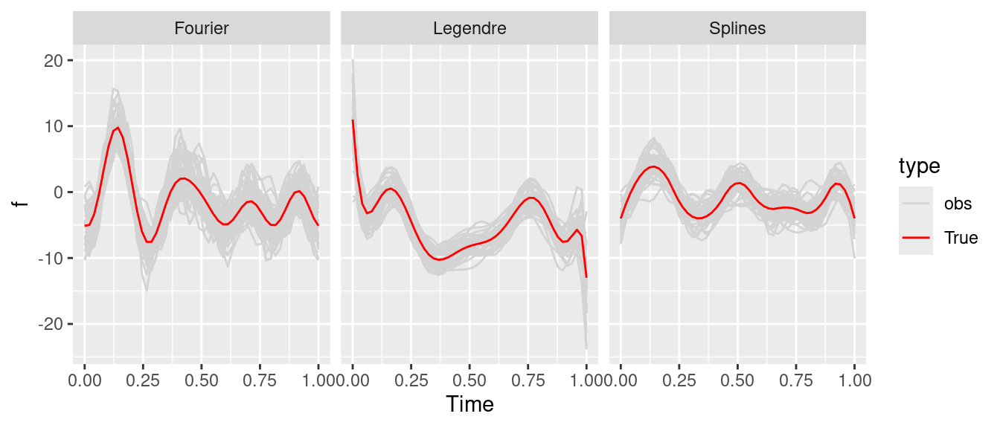
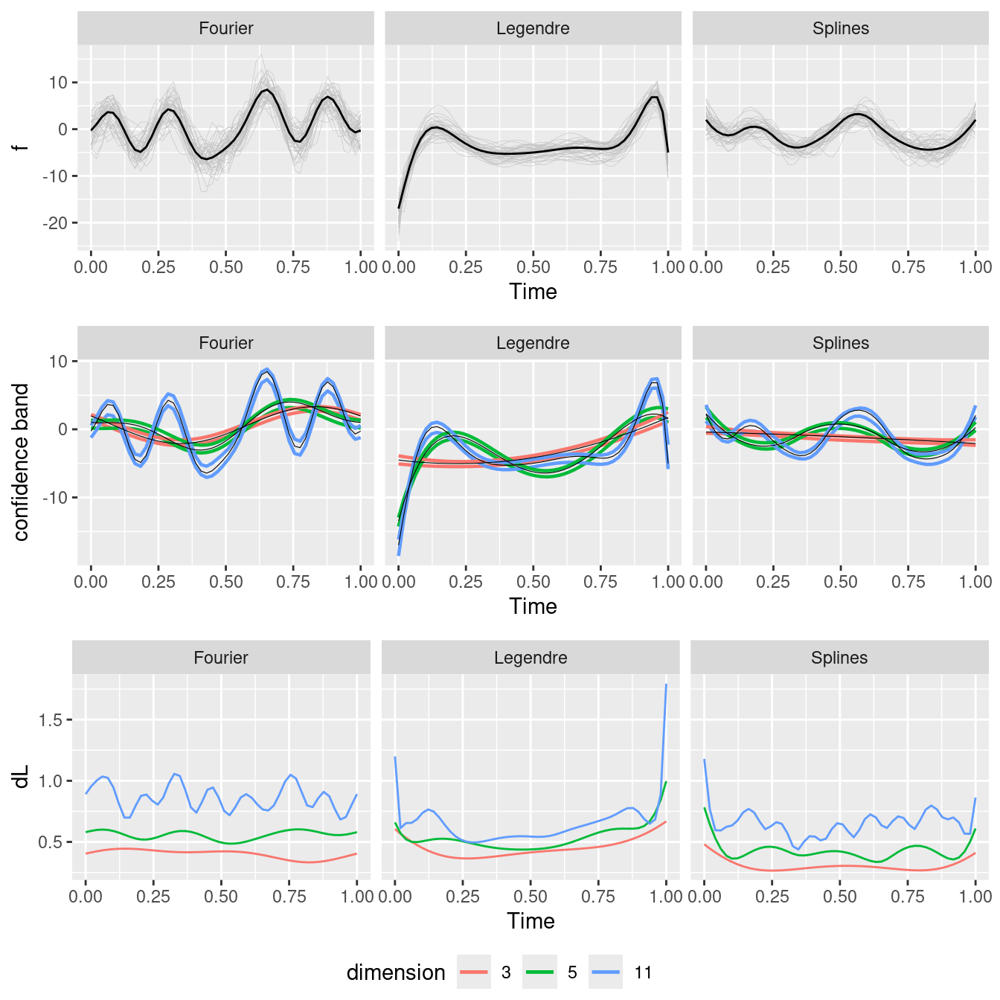
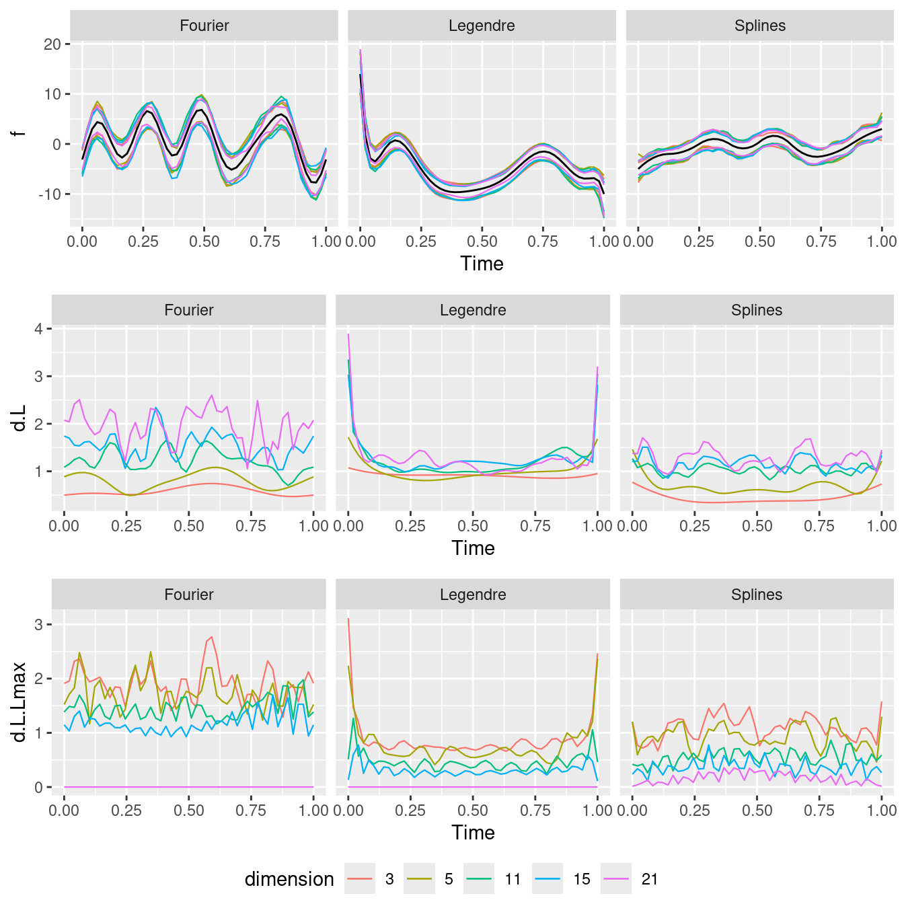
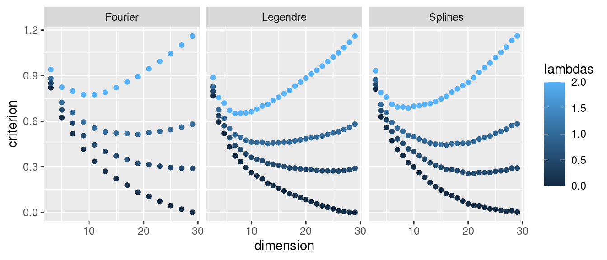
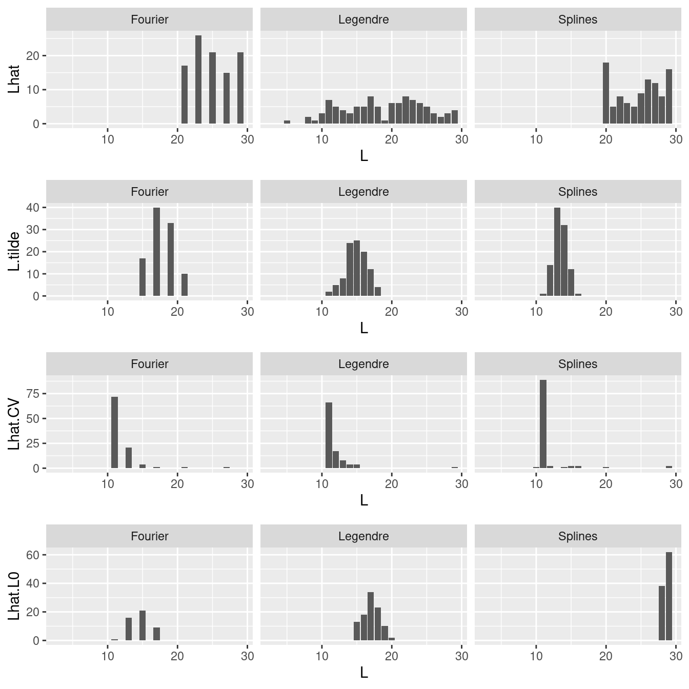
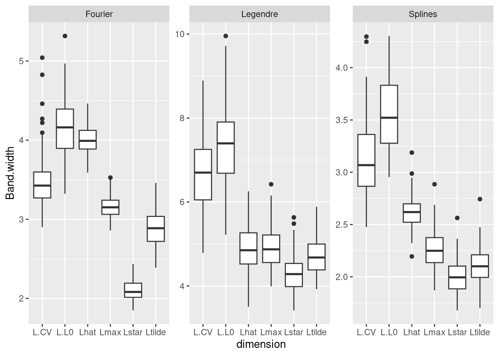
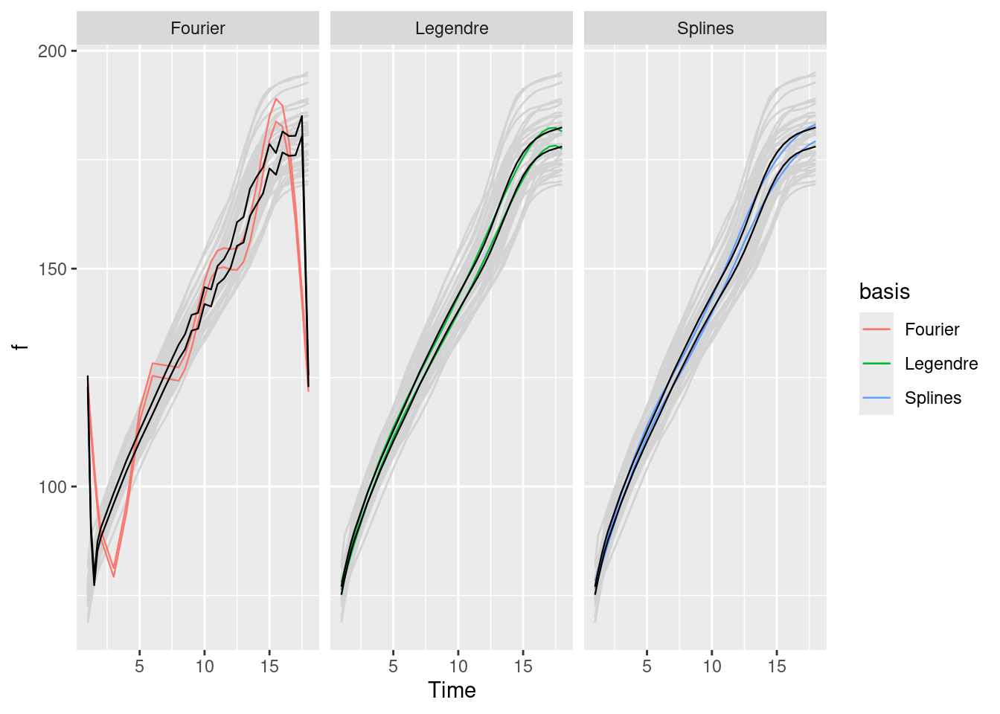
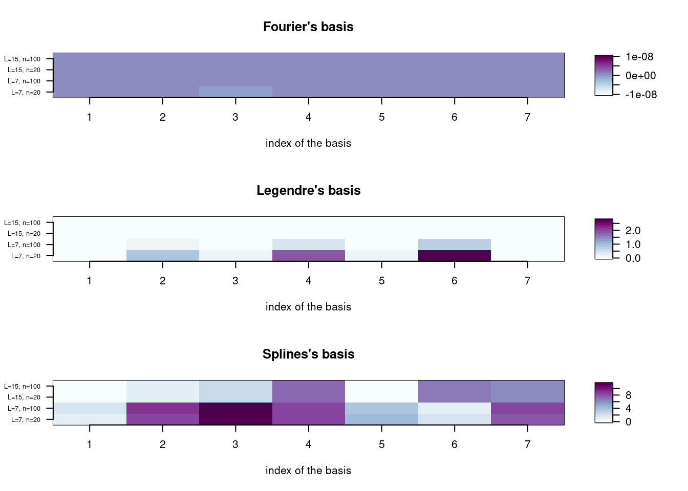

colorize <- function(x, color) {
if (knitr::is_latex_output()) {
sprintf("\\textcolor{%s}{%s}", color, x)
} else if (knitr::is_html_output()) {
sprintf("<span style='color: %s;'>%s</span>", color,
x)
} else x
}Should we correct the bias in Confidence Bands for Repeated Functional Data?
Abstract
While confidence intervals for finite quantities are well-established, constructing confidence bands for objects of infinite dimension, such as functions, poses challenges. In this paper, we explore the concept of parametric confidence bands for functional data with an orthonormal basis. Specifically, we revisit the method proposed by Sun and Loader, which yields confidence bands for the projection of the regression function in a fixed-dimensional space. This approach can introduce bias in the confidence bands when the dimension of the basis is misspecified. Leveraging this insight, we introduce a corrected, unbiased confidence band. Surprisingly, our corrected band tends to be wider than what a naive approach would suggest. To address this, we propose a model selection criterion that allows for data-driven estimation of the basis dimension. The bias is then automatically corrected after dimension selection. We illustrate these strategies using an extensive simulation study. We conclude with an application to real data.
Keywords
functional data, repeated data, confidence band, Kac-Rice formulae, bias, dimension selection
Introduction
Functional data analysis is widely used for handling complex data with smooth shapes, finding applications in diverse fields such as neuroscience (e.g., EEG data, @Zhang2020), psychology (e.g., mouse-tracking data, @Quinton-2017-escon), and sensor data from daily-life activities (@jacques2022).
We consider several independent observations of the same function, i.e. noisy functional data. To analyze this data, a classic approach involves projecting the data onto a functional space defined by a family of functions (@LI2022104806, @kokoszka2017introduction Chapter 3). When the family is an orthonormal basis, e.g., the Legendre basis (with the standard scalar product) or Fourier (with another scalar product), the projection is explicit and it is possible to obtain theoretical results. However, some families, such as splines, are not orthonormal for the standard scalar product. We will discuss the impact of the choice of this family on estimation. We explain why the use of a functional space offers a key advantage: it reduces the problem of inference to the estimation of coefficients, for example by least squares or maximum likelihood estimation. The function estimator is then simply an average after projection onto the functional base. It is important to accompany the function estimate with a measure of the uncertainty of that estimate, usually using confidence intervals or bands. In this paper, we focus on constructing a simultaneous confidence band for the mean of the function, rather than point-wise confidence intervals. This task presents several challenges: the confidence band must effectively control the simultaneous functional type-I error rate, as opposed to point-wise rates; it must strike a balance between being sufficiently conservative to maintain a confidence level while not being overly so as to render it meaningless; and the method used to construct this confidence band should be computationally feasible for practical application.
Several developments have already been proposed to answer these questions. First, let us consider the case of a single individual (no repetition) but with many time points. Some methods study the asymptotic distribution of the infinity norm between the true function and its estimator. The asymptotics in the number of time points is studied in @Hall1991, @Claeskens2003. This approach only works for large datasets in time and is likely to be too conservative otherwise. For small samples, bootstrap methods have been developed to compute the confidence band (@Neumann1998, @Claeskens2003), but with a high computational cost. Another approach is to construct confidence bands based on the volume of the tube formula. @sun1994 studied the tail probabilities of suprema of Gaussian random processes. This approach is based on an unbiased linear estimator of the regression function. @Zhou1998 used the volume-of-tube formula for estimation by regression splines. @Krivobokova2010 used this method for the construction of confidence bands by penalized spline estimators. They proposed to mix Bayesian and frequentist approaches, in order to obtain the good properties of the Bayesian world while reducing the variability to be less conservative using the frequentist approach. The bias is taken into account by spline modeling, assuming that enough knots are considered.
Some papers, like ours, rely on several observations of the same function. @Liebl2019 proposed a method based on the Kac-rice formula, random field theory and the volume-of-tube formula. They provide a band with locally varying widths using an unbiased estimator. Their method does not require estimation of the full covariance function of the estimator, but only its diagonal. This reduces the computational time. From a practical viewpoint, @CB_survivalAnalysis2022 introduced a package to popularize simultaneous confidence bands, in the context of survival analysis. @bunea2011 propose a threshold-type estimator and derive error bounds and simultaneous confidence bands, having an unbiased estimator. @TELSCHOW202270 propose a simultaneous confidence band based on the Gaussian kinematic formula. Again, it assumes access to an asymptotically unbiased estimator of the function of interest. The coverage will thus be guaranteed in the asymptotic setting after removing the bias, by smoothing the data for example. Their paper considers the non-gaussian and non-stationary cases. @wang2022 proposed a simultaneous Kolmogorov-Smirnov confidence band by modeling the error distribution, thus avoiding the estimation of the covariance structure of the underlying stochastic process. They rely on B-splines for the estimation of the mean curve. Note that recent extensions have been proposed, based on Lipschitz-Killing-Curvatures estimators in @Telschow2023, based on conformal prediction in @conformalPrediction2022, or having a prediction goal in mind in @Jacques2023 by considering functional time series data set.
One limitation of all those approaches is that they do not clearly take into account the bias of the functional estimator. Taking account of bias is particularly important when working in a non-asymptotic context. @sun1994 proposed a bias correction for a particular class of functions but left the smoothing parameter choice open, leading to an unusable estimator. In the nonparametric framework, the bias is approximated using the estimator of the second derivative of the underlying mean function (@Xia1998). But in general, there is a lack of discussion on how to handle the bias of the functional estimator, even in the simple case of a functional space of finite dimension.
Another issue is the selection of the dimension of the basis. Hard-thresholding approaches, cross-validation methods (@LI2022104806) or model selection framework could be used to select the best dimension. However, these approaches need to be adapted to the specific case of controlling the level of a confidence band. Few references exist on this subject. For example, while the model selection paradigm has been extensively studied in the literature, in multivariate statistics or functional data analysis (e.g., @GoeppSubmitted, @ANEIROS2022104871, @BASNA2022104868), it has not been explored in the context of confidence band construction.
The objective of this paper is to address the bias problem in confidence band construction for a general function, in the non-asymptotic setting, utilizing a finite functional orthonormal family and to select the best band. Our contributions are as follows:
- we disentangle the bias issue by explicitly defining the parameter of interest within the approach of @sun1994;
- we propose a bias correction method in a new confidence band for the function of interest. This provides a collection of debiased confidence bands. We also propose a criteria to select the best band, by splitting the sample into two sub-samples
- to avoid the loss of precision due to sample splitting, we propose a second heuristic method for selecting the dimension of the approximation space, treating it as a model selection problem, with a trade-off between conservatism and confidence level assurance; this approach does not correct the bias of each band of the collection but selects a band with a negligible bias;
- we illustrate the proposed strategies and compare them to cross-validation or threshold approaches;
- we also illustrate the impact of the choice of the functional family, including non-orthonormal families.
The paper is organized as follows: Section 2 introduces the functional regression model, the considered functional family and the corresponding approximate regression models, as well as an estimator defined in the finite space, along with descriptions of the error terms. In Section 3, we propose a confidence band for the approximate regression function in the space of finite dimension, where the dimension is fixed. Section 4 proposes a strategy to construct a confidence band for the true function. This last confidence band being too conservative, Section 5 introduces a model selection criterion to select the best confidence band, doing a trade-off between conservatism and confidence level assurance. Section 6 illustrates the different estimating procedures of the confidence band. Section 7 proposes an application on real data. Section 8 ends the paper by a conclusion and discussion of perspectives.
Statistical Model
In this paper, we consider time series as discrete measurements of functional curves. We first present the general functional regression model (Section 2.1) where the regression function belongs to a finite functional family of dimension \(L^*\). In practice, this dimension \(L^*\) is unknown and we will work on functional space of dimension \(L\). The regression model on the finite family of functions is presented in Section 2.2, and an estimator is proposed in Section 2.3, with a description of the error terms.
In the rest of the paper, we consider the space \(L^2([0,1])\) with its standard scalar product \(<f_1,f_2> = \int_0^1 |f_1(t)f_2(t)|dt\), for \(f_1,f_2 \in L^2([0,1])\). The notation \(Vect\) denotes the linear span.
Functional regression model
Let \(y_{ij}\) be the measure at fixed time \(t_{j} \in [a,b]\) for individual \(i=1, \ldots, N\), with \(j=1, \ldots, n\). The case with time observations dependent of the individuals is a natural extension of this case, but introduces a bias through the interpolation that is not easy to take into account. We restrict ourselves to \([a,b] = [0,1]\), without loss of generality. We assume these observations are discrete-time measurements of individual curves, which are independent and noisy realisations of a common function \(f\) that belongs to a functional space. Thus for each individual \(i\), we consider the following functional regression model \[\begin{equation*} y_{ij} = f(t_{j}) + \varepsilon_{ij}, \end{equation*}\] where \(\varepsilon_{i.}=(\varepsilon_{i1}, \ldots, \varepsilon_{in})\) is the measurement noise assuming that the \(\varepsilon_{i}\) are independent.
For each individual \(i=1, \ldots, N\), we denote \(y_{i.}=(y_{i1}, \ldots, y_{in})\) , \(t_{.}=(t_{1}, \ldots, t_{n})\) and \(f(t_{.})=(f(t_{1}), \ldots, f(t_{n}))\) the \(n \times 1\) vectors of the observations, times and function \(f\) evaluated in \(t_{.}\), respectively. We also denote \(\mathbf{y} = (y_{1.}, \ldots, y_{N.})\) the whole matrix of observations.
Let us introduce the functional space \(\mathcal{S}^{L^*} = Vect((t \mapsto B_\ell^{L^*}(t))_{1\leq \ell \leq L^*})\) with \(L^*\) functions \((B_\ell^{L^*})_{1\leq \ell \leq L^*}\) assumed to be linearly independent. Then, for any \(f \in \mathcal{S}^{L^*}\), there exists a unique vector of coefficients \((\mu_{\ell}^{L^*})_{1\leq \ell \leq L^*}\) such that, for all \(t\), \(f(t) = \sum_{\ell =1}^{L^*} \mu_{\ell}^{L^*} B_\ell^{L^*}(t)\). The regression function \(f\) verifies the following assumption:
Assumption 1. The function \(f\) belongs to the space \(\mathcal{S}^{L^*}\) of dimension \(L^*\). It is denoted \({f}^{L^*}\) and defined as: \[f(t) = {f}^{L^*}(t) = \sum_{\ell = 1}^{L^*} \mu_\ell^{L^*} B^{L^*}_\ell(t). \]
Many functional spaces are available in the literature, as Splines, Fourier or Legendre families. We introduce the following assumption:
Assumption 2. The functional family \((t \mapsto B^{L^*}_\ell(t))_{1\leq \ell\leq L^*}\) is orthonormal with respect to the standard scalar product \(<.,.>\).
Note that if Assumption 2 holds, one get \(\mu_\ell^{L^*} = <{f}^{L^*},B^{L^*}_\ell>\) for \(\ell = 1,\ldots, L^*\). The Legendre family is orthonormal, the Fourier family is orthogonal for the standard scalar product (but not orthonormal), and the B-splines family is not orthogonal. We will illustrate the impact of using one family or the other.
We also consider a functional noise through the following assumption.
Assumption 3. The sequence \(\varepsilon_{i}\) is functional and allows Karhunen-Loève \(L^2\) representation: there exists a sequence of coefficients \((c_{i\ell})_{1\leq \ell}\) such that \[\varepsilon_{ij} = \sum_{\ell \geq 1} c_{i\ell} \phi_\ell(t_{j}),\] where the functions \((\phi_\ell)_{1\leq L}\) can be written through eigenvalues and eigenfunctions of the covariance matrix \(cov(\varepsilon_{ij}, \varepsilon_{ij'})\). Practically, we assume this sum to be finite, as done for example in @Chen2015: there exists \(L^\varepsilon\) such that \[\varepsilon_{ij} = \sum_{1 \leq L \leq L^\varepsilon} c_{i\ell} \phi_\ell(t_{j}),\]
We also assume that the coefficients are Gaussian: for all \(i=1,\ldots, N\) and \(\ell=1, \ldots, L^\varepsilon\), \[c_{i \ell} \sim_{iid} \mathcal{N}(0,\sigma^2).\]
Assumption 1 and Assumption 3 imply that each curve \(y_i\) belongs to a finite family: for \(j=1,\ldots,n\), \[ y_{ij} = \sum_{\ell=1}^{L^*} \mu_{\ell}^{L^*} B_\ell^{L^*}(t_{j}) + \sum_{\ell=1}^{L^\varepsilon} c_{i\ell} \phi_\ell(t_{j}). \]
As the observations are recorded at discrete time points \((t_j)_{1\leq j \leq n}\), for \(L\in \mathbb{N}\), let us denote \(\mathbf{B}^L\) the matrix of \(n\times L\) with coefficient in row \(j\) and column \(\ell\) equal to \(B^L_\ell(t_{j})\), and the basis for the noise \(\Phi^{L^\varepsilon} = (\phi_\ell(t_j))_{1\leq \ell \leq L^\varepsilon, 1\leq j \leq n}\). Let us introduce \(c_{i.}=(c_{i1}, \ldots, c_{iL^\varepsilon})\) the \(L^\varepsilon \times 1\) vector. Then \(\varepsilon_{i.} = \Phi^{L^\varepsilon} c_{i.}\). The vectors \(y_{i.} \in \mathbb{R}^n\) are thus independent and \(y_i\sim \mathcal{N}_n(f(t_{.}), \sigma^2 \Sigma^{L^\varepsilon})\) with \(\Sigma^{L^\varepsilon} = \Phi^{L^\varepsilon} (\Phi^{L^\varepsilon})^T\).
The objective of this paper is to construct a tight confidence bound for \(f^{L^*}\) using data \((y_{ij})_{ij}\). The main challenge is that the true dimension \(L^*\) is unknown. In the rest of the paper, we will work with a collection of models defined on a finite family of dimension \(L\) with \(L\in \{L_{\min}, \ldots, L_{\max}\}\), \(L_{\max}\) being chosen to be sufficiently large by the user, expecting that \(L^*\leq L_{\max}\). \(L_{\max}\) has to be large enough to do overfitting. Then we will propose different strategies to choose the best bandwidth among the different collections.
First, in Section 2.2 and Section 2.3, we define for a fixed \(L\) the corresponding regression model and its estimator. Then Section 3, Section 4 and Section 5 will introduce the different bandwidths.
Approximation of the model on a finite family
Let \(f^{L^*} \in \mathcal{S}^{L^*}\) with \(L^*\) unknown, and consider the space \(\mathcal{S}^L\) for \(L\) fixed in \(\{L_{\min}, \ldots, L_{\max}\}\). As \(\mathcal{S}^L\) is a family of linearly independent functions, there is always a unique vector \(\mu^{L,L^*}\) of coefficients defining \(f^{L,L^*}(t) = \sum_{\ell_=1}^L \mu_\ell^{L,L^*} B_\ell^L(t)=B^L(t) \mu^{L,L^*}\) such that \[f^{L,L^*} = \arg\min_{f \in \mathcal{S}^L}\{\|f^{L^*} - f\|_2^2\}.\] If the family is orthonormal, it corresponds to the projected coefficients \(\mu_{\ell}^{L,L^*}\): \[\mu_{\ell}^{L,L^*} :=<f^{L^*}, B_\ell^L>.\]
We can prove the following property:
Proposition 1 Under Assumption 1, \[f^{L^*,L^*} = f^{L^*}.\] Moreover, if Assumption 2 also holds, the projection coefficients verify \[\mu_{\ell}^{L,L^*} = \mu_\ell^{L^*} \quad{ for }\; \ell =1, \ldots, \min(L, L^{*}).\]
In practice, data are observed at discrete time, we consider the operator \(\mathbf{P}^L\) defined as the matrix \(\mathbf{P}^L = ((\mathbf{B}^L)^T \mathbf{B}^L)^{-1} (\mathbf{B}^L)^T\) of size \(L\times n\). This coincides with the orthogonal projection when we deal with an orthonormal basis, but it is also consistent for non orthonormal family, coming back to the least square estimator on a specified family. Then we define the coefficients \(\underline{\mu}^{L,L^*}\) which are the coefficients of \({\mu}^{L,L^*}\) approximated on the vector space, denoted \(\mathbf{S}^L\), defined by the matrix \(\mathbf{B}^L\). \[\underline{\mu}^{L,L^*} := \mathbf{P}^L \mathbf{B}^{L^*}\mu^{L^*}.\]
The corresponding finite approximated regression function is denoted \(\underline{f}^{L,L^*}\) and is defined, for all \(t\in [0,1]\), as \[\underline{f}^{L,L^*}(t) = B^L(t) \underline{\mu}^{L,L^*}.\]
We can prove the following properties linking \(L, L^*\) and the number of timepoints \(n\):
Proposition 2 Under Assumption 1 and Assumption 2, the diagonal elements of \(\mathbf{P}^L \mathbf{B}^{L^*}\) are such that for \(\ell=1, \ldots, \min(L, L^*),\) \[[\mathbf{P}^L \mathbf{B}^{L^*}]_{\ell\ell}=1.\]
- When \(L\geq L^*\), when \(n>L\), we have for \(\ell=1, \ldots, L^*\),
\[ \underline{\mu}^{L,L^*}_\ell = \mu^{L^*}_\ell.\]
- When \(L<L^*\), for \(\ell =1, \ldots, L\), \[\underline{\mu}^{L,L^*}_\ell \neq \mu^{L^*}_\ell.\]
- When \(n\rightarrow\infty\), for \(\ell = 1,\ldots, L\) \[\underline{\mu}_\ell^{L,L^*}\rightarrow \mu_\ell^{L^*}. \]
- If \(n>L^*\), then \(f^{L^*} = f^{L^*,L^*} = \underline{f}^{L^*,L^*}\).
Estimator
Let \(L\in \{L_{\min}, \ldots, L_{\max}\}\). This section presents the least square estimator of the regression function on the space of dimension \(L\) defined by the family \(\mathbf{B}^L\) and discusses its error.
Estimation of the regression function
When considering the estimation of the regression function \(f^{L^*}\) on the space of dimension \(L\) defined by the family \(\mathbf{B}^L\), we do not directly estimate \(f^{L^*}\) but its projection on this finite space, which corresponds to the projected function \(\underline{f}^{L,L^*}(t)\) and its associated coefficients \((\underline{\mu}_\ell^{L,L^*})_{1 \leq \ell \leq L}\).
Definition 1 The vector of coefficients \((\underline{\mu}_\ell^{L,L^*})_{1 \leq \ell \leq L}\) is estimated by the least square estimator \(\hat{\underline{\mu}}^{L, L^*}\) defined as: \[\begin{align*} \hat{\underline{\mu}}^{L, L^*}:=\frac1N \sum_{i=1}^N \mathbf{P}^L y_{i.}. \end{align*}\]
For a fixed \(t \in [0,1]\), the estimator of the function \(\underline{f}^{L,L^*}(t)\) is defined by:
\[ \underline{\hat{f}_{}}^{L,L^*}(t) = \sum_{\ell=1}^L \underline{\hat \mu}_\ell^{L,L^*} B^L_\ell(t)= B^L(t)\hat{\underline{\mu}}^{L,L^*}. \tag{1}\]
Equation 1 directly implies that the estimator is thus the empirical mean of the functional approximation of each individual vector of observations. Because we work with least squares estimators, we can easily study the error of estimation of \(\hat{\underline{\mu}}^{L, L^*}\) and \(\underline{\hat{f}_{}}^{L,L^*}\).
Proposition 3 Under Assumption 1 and Assumption 3, we have \[\begin{align*} \hat{\underline{\mu}}^{L, L^*} &\sim \mathcal{N}_L\left(\underline{\mu}^{L, L^*}, \frac{\sigma^2}N\Sigma_{B}^{L,L^\varepsilon} \right), \end{align*}\] where the \(L\times L\) covariance matrix \(\Sigma_{B}^{L,L^{\varepsilon}}\) is defined as \(\Sigma_{B}^{L,L^\varepsilon}:=\mathbf{P}^L \Sigma^{L^\varepsilon} (\mathbf{P}^L)^T\) with \(\Sigma^{L^\varepsilon}= \Phi^{L^\varepsilon} (\Phi^{L^\varepsilon})^T\).
Moreover, \(B^L()\mathbf{P}^L y_i\) is a Gaussian process with mean \(\underline{f}^{L,L^*}()\) and covariance function \((s,t) \mapsto \sigma^2 B^L(s) \Sigma_{B}^{L,L^\varepsilon} (B^L(t))^T\), and \((\underline{\hat{f}_{}}^{L,L^*}- \underline{f}^{L,L^*})()\) is a centered Gaussian process with covariance function \(C^{L,L^*}: (s,t) \mapsto \frac{\sigma^2}N B^L(s) \Sigma_{B}^{L,L^\varepsilon} B^L(t)^T\).
The proof is given in Appendix.
Even if the estimator \(\underline{\hat{f}_{}}^{L,L^*}\) is defined on the functional space associated to \(\mathbf{S}^L\), it can also be seen as an estimator of the function \(f^{ L^*}\) which lies in the space \(\mathcal{S}^{L^*}\). In that case, the error includes a functional approximation term due to the approximation of \(f^{ L^*}\) on the space \(\mathcal{S}^L\), which will be nonzero if \(L\neq L^*\). It corresponds to the bias of the estimator \(\underline{\hat{f}_{}}^{L,L^*}\), i.e. the difference between its expectation and the true \(f^{ L^*}\). Indeed, recalling that \(f^{L^*} = \underline{f}^{L^*,L^*}\), the error of estimation can be decomposed into \[ \underline{\hat{f}}^{L, L^*}(t) -f^{L^*}(t) = \underline{\hat{f}}^{L, L^*}(t) - \underline{f}^{L, L^*}(t) + \underline{f}^{L, L^*}(t) - \underline{f}^{L^*,L^*}(t) =: Stat_{L,L^*}(t) + Bias_{L,L^*}(t), \tag{2}\]
The first term \(Stat_{L,L^*}(t) = \underline{\hat{f}}^{L, L^*}(t) - \underline{f}^{L, L^*}(t)\) is the (unrescaled) statistics of the model. The second term \(Bias_{L,L^*}(t) = \mathbb{E}(\underline{\hat{f}}^{L, L^*}(t)) - \underline{f}^{L^*,L^*}(t)\) is the bias of the estimator \(\underline{\hat{f}}^{L, L^*}(t)\) when estimating the true function \(\underline{f}^{L^*,L^*}(t)\).
Let us remark that this bias is different than the bias of the estimator \(\underline{\hat{f}}^{L, L^*}(t)\) when estimating the projected function \(\underline{f}^{L,L^*}=f^{ L^*}\), which is 0. The two terms defined in Equation 2 are more detailed in the two next subsections.
Statistics
The statistics of the model, \(t\mapsto Stat_{L,L^*}(t) = \underline{\hat{f}}^{L, L^*}(t) - \underline{f}^{L, L^*}(t)\), is a random functional quantity which depends on the estimator \(\underline{\hat{f}}^{L, L^*}\). From Proposition 3, for any \(t\in [0,1]\), we define the centered and rescaled statistics \(Z_L(t)\): \[Z_L(t):= \frac{Stat_{L,L^*}(t)}{\sqrt{\text{Var}(Stat_{L,L^*}(t))}} = \frac{\underline{\hat{f}}^{L, L^*}(t) - \underline{f}^{L, L^*}(t)}{\sqrt{C^{L, L^*}(t,t)}}\sim \mathcal{N}(0,1). \]
The covariance function can be naturally estimated using the observations \(y_{i.}\) as \[\hat C^{L, L^*}(s,t) = \frac1{N-1}\sum_{i=1}^{N} (B^L(s)\mathbf{P}^L y_{i.} - \underline{\hat{f}_{}}^{L,L^*}(s))(B^L(t)\mathbf{P}^L y_{i.} - \underline{\hat{f}_{}}^{L,L^*}(t)).\]
Bias
The bias is due to the fact that the estimation is potentially performed in a different (finite) space than the space where the true function \(\underline{f}^{L^*,L^*}\) lives. This is a functional bias, which is not random. It corresponds to the approximation of \(f^{L^*}\) from \(\mathcal{S}^{L^*}\) to the space \(\mathcal{S}^{L}\). It can be written as follows: \[Bias_{L,L^*}(t) = B^L(t) \underline{\mu} ^{L,L^*} - B^{L^*}(t) \mu^{L^*}.\] Thus, when \(L<L^*\) and the family is orthonormal, the approximation is the orthogonal projection and we can deduce that \[Bias_{L,L^*}(t)= \sum_{\ell=1}^L B_\ell^L(t)\underline{\mu}_\ell^{L,L^*} - \sum_{\ell=1}^{L^*} B_\ell^{L^*}(t)\underline{\mu}_\ell^{L^*} = \sum_{\ell = L+1}^{L^*} B_\ell^{L^*}(t)\underline{\mu}_\ell^{L^*}.\]
From Proposition 3, we can directly deduce the following proposition:
Proposition 4 Under Assumption 1 and Assumption 3, the bias is, for all \(t\in [0,1]\),
- for \(L<L^*\), \(Bias_{L,L^*}(t)\neq 0\),
- for \(L\geq L^*\), \(Bias_{L,L^*}(t) = 0\).
In the next section, we explain how we use this property to derive confidence bands of \(\underline{f}^{L, L^*}\) and \(f^{L, L^*}\).
Confidence Bands of \(\underline{f}^{L, L^*}\) and \(f^{L, L^*}\) for a fixed \(L\)
The objective is to construct a confidence band for the two functions \(\underline{f}^{L, L^*}\) and \(f^{L, L^*}\), based on the observations \(\mathbf{y}\), for a given value \(L\in \{L_{\min}, \ldots, L_{\max}\}\). The band for \(\underline{f}^{L, L^*}\) enters the framework proposed by @sun1994 which relies on an unbiased and linear estimator of the function as the estimator \(\underline{\hat f}^{L, L^*}\) is an unbiased estimator of \(\underline{f}^{L, L^*}\). We recall in Section 3.1 the construction of this confidence band which attains a given confidence level in a non-asymptotic setting, that is for a finite number of observations \(n\) for each individual. Then in Section 3.2, we prove that the confidence band proposed by @sun1994 can be viewed as a confidence band for \(f^{L, L^*}\) with an asymptotic confidence level, the asymptotic framework being considered when \(n\rightarrow\infty\).
Confidence band for \(\underline{f}^{L,L^*}\)
Consider \(1-\alpha\) a fixed confidence level. The aim is to find a function \(d^L()\) such that \[\mathbb{P}\left( \forall t \in [0,1],\; \underline{\hat{f}_{}}^{L,L^*}(t) -d^L(t)\leq \underline{f}^{L,L^*}(t)\leq \underline{\hat{f}_{}}^{L,L^*}(t) +d^L(t)\right) = 1-\alpha.\] Consider the normalized statistics \(Z_L(t)\) which is a centered and reduced Gaussian process. We want to find the quantile \(q^L\) satisfying
\[q^L =\arg\min_{q} \left\{ \mathbb{P}\left(\max_{t \in [0,1]} \left|Z_L(t)\right| \leq q \right) = 1 - \alpha\right\}. \tag{3}\]
Then we can take \(d^L(t) = q^L \sqrt{C^{L, L^*}(t,t)}\). The covariance function \(C^{L, L^*}(t,t)\) can be replaced by its estimator \(\hat{C}^{L,L^*}(t,t)\), making the distribution a Student’s distribution with \(N-1\) degrees of freedom. Thus, it only requires to be able to compute the critical value \(q^L\).
This can be done following @sun1994 who propose a confidence band for a centered Gaussian process. Their procedure is based on an unbiased linear estimator of the function of interest, which is the case for \(\underline{\hat{f}_{}}^{L,L^*}\) when we consider a band for \(\underline{f}^{L,L^*}\). We recall their result in the following proposition, the computation of the value \(q^L\) is detailed thereafter.
Theorem 1 (@sun1994) Set Assumption 1 and Assumption 3 and a probability \(\alpha\in [0,1]\). Then, we have \[\mathbb{P}\left(\forall t \in [0,1], \left|\underline{\hat{f}}^{L, L^*}(t)-\underline{f}^{L,L^*}(t)\right| \leq \hat d^L(t)\right) = 1- \alpha\] with \[\begin{align*} \hat d^L(t) = \hat q^L \sqrt{\hat C^{L,L^*}(t,t)/N} \end{align*}\] and \(\hat q^L\) defined as the solution of the following equation, seen as a function of \(q^L\): \[ \alpha = \mathbb{P}\left(|t_{N-1}|>q^L\right) +\frac{\| \tau^L\|_1}{\pi}\left( 1+\frac{(q^L)^2}{N-1}\right)^{-(N-1)/2} , \tag{4}\] with \((\tau^L)^2(t)= \partial_{12} c(t,t) = Var(Z_L(t))'\) where we denote \(\partial_{12}c(t,t)\) the partial derivatives of a function \(c(t,s)\) in the first and second coordinates and then evaluated at \(t=s\).
We can thus deduce a confidence band of level \(1-\alpha\) for \(\underline{f}^{L,L^*}\): \[\begin{align*} CB_1(\underline{f}^{L,L^*})& = \left\{ \forall t\in [0,1], \left [\underline{\hat{f}}^{L, L^*}(t) -\hat d^L(t) ; \underline{\hat{f}}^{L, L^*}(t) +\hat d^L(t) \right ]\right\}. \end{align*}\]
The value \(\hat q^L\) is defined implicitly in Equation 4 which involves the unknown and not explicit quantity \(t\mapsto \tau^L(t)\). @Liebl2019 propose to estimate \(\tau^L(t)\), for all \(t\), by \[\begin{align*} \hat \tau^L(t) &= \left(\widehat{Var}(({U}^{L})'_{1}(t), \ldots, ({U}^{L})'_{N}(t)\right)^{1/2}\\ &= \left(\frac{1}{N-1}\sum_{i=1}^N\left(({U}^{L})'_{i}(t)-\frac1N\sum_{j=1}^N({U}^{L})'_{j}(t)\right)^2\right)^{1/2}, \end{align*}\] where \({U}^L_{i}(t) = (P^L y_{i.}(t)-\underline{\hat{f}}^{L, L^*}(t))/(\hat C^{L,L^*}(t))^{1/2}\) and \(({U}^{L})'_{i}\) is a smooth version of the differentiated function \({U}^L_{i}\). Then we take the \(L_1\)-norm of \(\hat \tau^L\).
Let us describe the behavior of \(\hat d^L\):
- \(\|\hat d^L\|_\infty\) increases with \(L\).
- When the functions \((B_\ell^L)_{1\leq \ell \leq L}\) form an orthonormal family, \(\|\hat d^L\|_\infty\) increases with \(L\) until \(L=L^*\) and then \(\|\hat d^L\|_\infty\) is constant with \(L\).
Their behavior will be illustrated with different function families in Section 6.
Asymptotic confidence band for \(f^{L,L^*}\)
Note that in the asymptotic framework \(n\rightarrow\infty\), the previous definition of \(\hat d^L\) induces a natural asymptotic confidence band for the function \(f^{L,L^*}\). Indeed, we can prove that
Theorem 2 Set Assumption 1 and Assumption 3 and a probability \(\alpha\in [0,1]\). Then, we have, \[\lim_{n \rightarrow +\infty} \mathbb{P}\left(\forall t \in [0,1], |\underline{\hat{f}}^{L, L^*}(t)-f^{L,L^*}(t)| \leq \hat d^L(t)\right) = 1-\alpha,\] with \(\hat d^L(t) = \hat q^L \sqrt{\hat C^{L,L^*}(t,t)/N}\) and \(\hat q^L\) is defined as the solution of Equation 4.
The proof is given in Appendix.
Then a confidence band for \(f^{L,L^*}\) at the asymptotic confidence level \(1-\alpha\) for a large number of observations \(n\) is given by \[\begin{align*} CB(f^{L,L^*})& = \left\{ \forall t\in [0,1], \left[\underline{\hat{f}}^{L, L^*}(t) -\hat d^L(t) ; \underline{\hat{f}}^{L, L^*}(t) +\hat d^L(t) \right]\right\}. \end{align*}\]
Confidence Band of \(f^{L^*}\) by correcting the bias
The function of interest is \(f^{L^*}=\underline{f}^{L^*, L^*}\), rather than \(\underline{f}^{L,L^*}\). Therefore, our objective is to construct a confidence band for \(f^{L^*}\). However, an unbiased estimator of \(f^{L^*}\) is not available by definition, since the true dimension \(L^*\) is unknown. We propose instead to work with the estimator \(\underline{\hat f}^{L,L^*}\) and to debias the corresponding confidence band.
To do this, we use the decomposition between the bias term and the statistical term, outlined in Equation 2. The idea is to bound the infinite norm of these two terms. A first strategy is to bound each term separately, then add the two bounds to construct the confidence band. However, this approach tends to produce a band that is too large and too conservative. This is because applying the infinite norm to each term before bounding them does not take into account the functional nature of the two terms.
A second strategy is to retain the functional aspect by bounding the infinity norm of the sum of the two functional terms. This approach is detailed in this section. In Section 4.1, we first rewrite the band as a band around \(\underline{f}^{L,L^*}(t)\). We need to estimate the band bound and the bias. To do this, we divide the sample into two sub-samples. This choice is not ideal because it increases the variability of the estimators. But at least, it provides independence between the estimators of the two quantities, which makes it possible to establish the theoretical coverage of the final band. More precisely we use a first subsample \(\mathbf{y}^1\) to estimate the bound defined in Section 3. A second subsample \(\mathbf{y}^2\) is used to estimate the bias term (without the infinite norm). This results in a pointwise correction of the bias, and the final confidence band is centered around \(\underline{\hat{f}}^{L_{\max},L^*}\). This procedure provides a collection of confidence bands, for \(L\in \{L_{\min}, \ldots, L_{\max}\}\) with variable width. Then, in Section 4.2, we propose a criterion to select the “best” band by minimizing its width. We discuss the band thus obtained at the end of the section and its limits.
Construction of the band of \(f^{L^*}\) for a given \(L\)
We introduce two independent sub-samples \(\mathbf{y}^1\) and \(\mathbf{y}^2\) of \(\mathbf{y}\) of length \(N_1\) and \(N_2\) such that \(N_1+N_2=N\).
We use the first sub-sample \(\mathbf{y}^1\) to calculate \(\underline{\hat{f}_1}^{L,L^*}(t)\), an estimator of \(\underline{f}^{L,L^*}(t)\) and a functional bound denoted \(\hat d_1^L\) that controls the bias term \(\underline{f}^{L,L^*}(t)-\underline{\hat{f}_1}^{L,L^*}(t)\). This bound is defined in Section 3 applied on \(\mathbf{y}^1\), for a given level \(\alpha\), such that:
\[ \mathbb{P}\left(\forall t\in[0,1], -\hat d_1^L(t) \leq \underline{f}^{L,L^*}(t) - \underline{\hat{f}}_1^{L,L^*}(t) \leq \hat d_1^L(t)\right) = 1-\alpha. \tag{5}\]
Next, we need to control the bias \(Bias_{L,L^*}(t) = \underline{f}^{L,L^*}(t)-f^{L^*}(t)\). Recall that when \(L_{\max}\) is sufficiently large and \(n> L_{\max}\), we have \(f^{L^*} = \underline{f}^{L_{\max},L^*}\). We therefore need to control the \(Bias_{L,L^*}(t) = \underline{f}^{L,L^*}(t) - \underline{f}^{L_{\max},L^*}(t)\). It would be tempting to replace \(Bias_{L,L^*}(t)\) by its estimation based on the second sample \(\mathbf{y}^2\). But this would introduce an estimation error that we also need to control, in the same spirit as what is done in @Pascal2017. We can again use Section 3 to compute the function \(\hat d_2^{L,L_{\max}}(t)\) on the sample \(\mathbf{y}^2\), and the functional estimators \(\underline{\hat{f}}_2^{L,L^*}(t)\) and \(\underline{\hat f}_2^{L_{\max}, L^*}(t)\) of \(\underline{f}^{L,L^*}(t)\) and \(\underline{ f}^{L_{\max}, L^*}(t)\), respectively. This allows us to construct the following band for \(\underline{f}^{L,L^*}(t) - \underline{f}^{L_{\max},L^*}\) for a confidence level \(1-\beta\),
\[ \mathbb{P}\left(\forall t\in[0,1], - \hat d_2^{L,L_{\max}}(t) \leq \underline{ f}^{L_{\max}, L^*}(t)- \underline{ f}^{L, L^*}(t) - (\underline{\hat f}_2^{L_{\max}, L^*}(t)-\underline{\hat f}_2^{L, L^*}(t)) \leq \hat d_2^{L,L_{\max}}(t)\right) = 1-\beta. \tag{6}\]
Combining Equation 5 and Equation 6, we can provide a debiased confidence band of \(f^{L^*}(t)\).
Proposition 5 Let us define \[\begin{align*} \hat\theta_1^L(t) &:= -\hat d_1^L(t) - \hat d_2^{L,L_{\max}}(t) +\underline{\hat f}_2^{L_{\max}, L^*}(t)-\underline{\hat f}_2^{L, L^*}(t) \\ \hat\theta_2^L(t)&:= \hat d_1^L(t) + \hat d_2^{L,L_{\max}}(t) +\underline{\hat f}_2^{L_{\max}, L^*}(t) - \underline{\hat f}_2^{L, L^*}(t), \end{align*}\] where \(\hat d_1^L(t)\) is defined on sample \(\mathbf{y}^1\) by Equation 5 for a level \(\alpha\) and \(\hat d_2^{L,L_{\max}}(t)\) is defined on sample \(\mathbf{y}^2\) by Equation 6 for a level \(\beta\). Then we have \[\begin{align*} \mathbb{P}\left(\forall t \in [0,1], \quad \hat \theta_1^L(t) \leq f^{L^*}(t)- \underline{\hat f}_1^{L, L^*}(t)\leq \hat\theta_2^L(t)\right)\geq 1-\alpha\beta. \end{align*}\]
The proof is given in Appendix.
This defines a confidence band which can be defined either around \(\underline{\hat{f}_{1}}^{L,L^*}\): \[\begin{align*} CB_2(\underline{f}^{L^*})=\left\{\forall t\in[0,1], \left[\underline{\hat{f}_1}^{ L, L^*}(t) + \hat\theta_1^{ L}(t) \, ;\, \underline{\hat{f}_1}^{ L, L^*}(t) + \hat\theta_2^{ L}(t) \right] \right\} \end{align*}\] or around \(\underline{\hat f}_2^{ L_{\max}, L^*}\): \[\begin{align*} CB_2(\underline{f}^{L^*})=\left\{\forall t\in[0,1], \left[\underline{\hat f_2}^{ L_{\max}, L^*}(t) + \bar \theta_1^L(t) \, ; \, \underline{\hat f_2}^{ L_{\max}, L^*}(t) +\bar \theta_2^L(t) \right]\right\}. \end{align*}\]
with \(\bar \theta_1^L(t) = \underline{\hat{f}_{1}}^{L,L^*}(t)-\underline{\hat f_2}^{ L, L^*}(t) -\hat d_1^L(t) - \hat d_2^{L,L_{\max}}(t)\) and \(\bar \theta_2^L(t) = \underline{\hat{f}_{1}}^{L,L^*}(t)-\underline{\hat f_2}^{ L, L^*}(t) + \hat d_1^L(t) + \hat d_2^{L,L_{\max}}(t)\).
Remark 1. The two functions \(\hat d_1^L(t)\) and \(\hat d_2^{L,L_{\max}}(t)\) are of the same order because they are constructed using the same approach. They depend on the length of the samples. To obtain the thinnest band, the best strategy is to divide the sample in two sub-samples of equal length \(N_1=N_2=N/2\).
The behavior of \(\hat d_1^L\) was described in Section 3. Let us describe the behavior of \(\hat d_2^{L,L_{\max}}\):
- \(\|\hat d_2^{L,L_{\max}}\|_\infty\) decreases with \(L\).
- When \(L>L^\varepsilon\), \(\|\hat d_2^{L,L_{\max}}\|_\infty\) is constant with \(L\) and the probability in Equation 6 is equal to \(1\).
- When \(L^{*}<L<L^\varepsilon\), \(\|\hat d_2^{L,L_{\max}}\|_\infty\) is constant with \(L\) when the functions \(B_\ell^L\) form an orthonormal family. Otherwise, the behavior is erratic.
This means that when the band defined in Proposition 5 is calculated for \(L>L^\varepsilon\), the confidence level is \(1-\alpha\) instead of \(1-\alpha\beta\).
The advantage of this approach is that the band bias is corrected and the level for the true function \(f^{L^*}\) is guaranteed when \(L^\varepsilon\) is large. This was the main aim of the paper. The main limit of this approach is that the band is constructed with samples with half sizes, leading to less precision. This will be illustrated in Section 6. Nevertheless, this method gives finer confidence bands than cross-validation, and with the right level of confidence.
A natural question is then the choice of the dimension \(L\). This is the purpose of the next section.
Influence of \(L\)
This approach produces a collection of debiased confidence bands for different values of \(L\). The confidence bands have different widths but a same confidence level \(1-\alpha\beta\). It is therefore natural to want to select one of them. This means that we want to select the best dimension \(L\) among the collection \(\{L_{\min}, \ldots, L_{\max}\}\). We need to define what “best” means. It is quite intuitive to want on the finest band, fine in the sense of a certain norm. Here we consider the infinite norm of the width of the confidence band. This gives preference to smooth bands. We therefore define the following criteria of selection of \(L\)
\[ \hat L = \arg\min_L \left\{\sup_{t} |\hat\theta_2^L(t)-\hat\theta_1^L(t)|\right\} = \arg\min_L \left\{\sup_t | \hat d^L(t) + \hat d^{L,L_{\max}}(t)|\right\}. \tag{7}\]
This global approach guarantees that each band of the collection is debiased and then the dimension is selected. It will be illustrated in Section 6.
In the next section, instead of debiasing each band, we employ another strategy focusing on the construction of a selection criteria that will guarantee that the bias is negligible.
Selection of the best confidence band with a criteria taking into account the bias
In this section, we want to use the collection of confidence bands defined in Section 3 without correcting their bias, but by proposing a selection criterion that is a trade-off between this bias and the dimension of the basis. To do this, we propose a new heuristic criterion linked to the definition of the band itself, considering the estimation of the band as the estimation of a quantile of a certain empirical process. The criterion is inspired by model selection tools for choosing the best dimension \(L\). In the following, we assume that \(L_{\max}\) is large enough such that \(\underline f^{L_{\max},L^*}=f^{L^*}\).
We work on the quantile \(q^L\) introduced in Equation 3, its oracle version \(q^{L^*}\) for level \(L^*\) and its estimate \(\hat q^L\). All are scalars, belonging to a collection indexed by \(L=L_{\min}, \ldots, L_{\max}\). A natural criterion for choosing the best \(L\) is that the estimator \(\hat q^L\) minimizes the quadratic error \(\mathbb{E}\left( \|q^{L^*}-\hat q^L\|^2\right)\). However, this quadratic error is unknown as \(q^{L^*}\) is unknown. We can not use it directly.
Instead, we study \(\|\hat{q}^{L_{\max}}-\hat q^L\|^2\). While the theoretical quadratic error \(\mathbb{E}\left( \|q^{L^*}-\hat q^L\|^2\right)\) decreases when \(L<L^*\) and increases when \(L>L^*\), the \(\|\hat{q}^{L_{\max}}-\hat q^L\|^2\) approximation to this error always decreases when \(L>L^*\), as illustrated in Section 6.
We see a behavior similar to a bias, high when the dimension is small, and small when the dimension is large. Selecting a dimension using this criterion will always overfit the data. We therefore propose to penalize this quantity by the dimension \(L\) divided by the sample size \(N\), as usual in model selection criterion. To do this we introduce a regularisation parameter \(\lambda>0\) which balances the two terms. A natural criteria to select the best \(L\) is then \[\widetilde{crit}(L) = \|\hat q^{L_{\max}}-\hat q^L\|^2 +\lambda \frac{L}{N}.\]
Then we define \[\tilde L = \arg\min_L \widetilde{crit}(L),\] and take the band centered around \(\underline{\hat{f}}^{\tilde L, L^*}\): \[CB_3(\underline{f} ^{L^*}) = CB_1(\underline{f}^{\tilde L, L^*})\]
This criterion is illustrated in Section 6.4. We also compare with two other standard approaches, heuristic as well, namely the cross-validation approach used to select the dimension \(L\) which minimizes the reconstruction error, and a thresholding method which keeps the higher dimension \(L\) with large enough coefficients. These two methods are less oriented to the objective of controling the level of the selected confidence band.
Simulation study
In this section, we illustrate the different statements provided along the paper on generated data. First, in Section 6.1, we describe the generating data process and illustrate the linear estimator considered in this paper. In Section 6.2, we illustrate the first confidence band, for a fixed level, as introduced in Section 3. Then, we illustrate the debiased confidence band in Section 6.3, and discuss the model selection criterion in Section 6.4. We finally study the generalization of the method out of the class of models in Section 6.5.
Generating data process
To illustrate the model, we simulate a regression functional model with \(n=50\) points per individual and \(N=40\) individuals. In Figure 1, the function \(f\) (red curve) belongs to the Fourier (resp. Legendre and Spline) family with \(L^*=11\) and the noisy observations \(y_{ij}\) (black curves) have a functional noise in dimension \(L^{\varepsilon}=20\), also in the Fourier (resp. Legendre and Spline) family on the left plot (resp. middle and right).
library(ggplot2)
library(fda)
library(orthopolynom)
library(wavelets)
library(basefun)
library(fields)
library(ggpubr)
func.basis = function(time, L, basis){
if (basis == 'Splines'){
B = bsplineS(time,breaks = seq(min(time), max(time), length.out = L-1), norder = 3, 0)
} else if (basis == 'Fourier'){
B = fourier(time,nbasis = L)
} else if (basis == 'Legendre'){
B = Legendre_basis(numeric_var("x", support = c(min(time), max(time))),
order = L-1)(time)
}
return(B)
}
dgp = function(n=50,N=40,sd=1,L.star=11, L.eps = 20, alpha.mu = NULL, basis = 'Fourier', f.true = NULL){
### n: number of timepoints
### N: number of individuals
### sd: noise level (standard deviation)
### L: number of functional basis for the signal
### L.eps: number of functional basis for the noise
### alpha.mu: vector of coefficients
### basis: functional basis, to be chosen in 'Legendre', 'Fourier', 'Splines'
### f.true: if one wants to fix the true function
time = seq(0, 1, length.out = n)
if (basis == 'Fourier'){
if (L.star%%2 == 0){ L.star = L.star+1}
if (L.eps%%2 == 0){ L.eps = L.eps+1}
}
if (is.null(f.true)){
### Create the functional basis
B = func.basis(time, L.star, basis)
### Generate randomly coefficients, if needed
if (is.null(alpha.mu)){
alpha.mu = sample(x = c(-5:-2, 2:5),size=L.star,replace=TRUE)}
if (basis == 'Fourier'){
alpha.mu = alpha.mu / 3
sd = sd/2
}
y = matrix(0,nrow = N, ncol = n)
f.true = B %*% alpha.mu
}
B.eps = func.basis(time, L.eps, basis)
y = matrix(0,nrow = N, ncol = n)
for (i in 1:N){
y[i,] = f.true + B.eps %*% matrix(rnorm(L.eps, 0, sd))
}
return(list(y = t(y), alpha.mu = alpha.mu, time = time, L.star=L.star, f.true = f.true))
}
set.seed(1)
n=50
N=40
sd=1
L.star=11
L.eps = 20
alpha.mu = NULL
set.seed(1)
basis = "Legendre"
data = dgp(n=n,N=N,sd=sd,L.star=L.star, L.eps = L.eps, alpha.mu = alpha.mu, basis = basis, f.true = NULL)
dfLegendre = data.frame( Time = rep(data$time,N+1),
basis = rep(basis, (N+1)*length(data$time)),
f = c(data$y, data$f.true),
type = rep(c(rep("obs", N), "True"), each = n), ind = rep(1:(N+1), each = n))
basis = "Fourier"
data = dgp(n=n,N=N,sd=sd,L.star=L.star, L.eps = L.eps, alpha.mu = alpha.mu, basis = basis, f.true = NULL)
dfFourier = data.frame( Time = rep(data$time,N+1),
basis = rep(basis, (N+1)*length(data$time)),
f = c(data$y, data$f.true),
type = rep(c(rep("obs", N), "True"), each = n), ind = rep(1:(N+1), each = n))
basis = "Splines"
data = dgp(n=n,N=N,sd=2*sd,L.star=L.star, L.eps = L.eps, alpha.mu = alpha.mu, basis = basis, f.true = NULL)
dfSplines = data.frame( Time = rep(data$time,N+1),
basis = rep(basis, (N+1)*length(data$time)),
f = c(data$y,data$f.true),
type = rep(c(rep("obs", N), "True"), each = n), ind = rep(1:(N+1), each = n))
df = rbind(dfLegendre, dfFourier, dfSplines)
ggplot(data = df, aes(x = Time, y = f, color = type, group = ind)) +
geom_line(linewidth= 0.5)+
scale_colour_manual(values = c("obs" = "lightgrey","True" = "red")) +
facet_grid(~basis)

Proposition 1 and Proposition 2 are illustrated in Appendix.
Confidence band for a fixed level
The band derived in Theorem 1 is illustrated on Figure 2. It displays on the top row several functional data generated under either the Fourier family (left), Legendre (middle) or Spline (right), on the middle row the confidence bands of \(\underline f^{L,L^*}\) for different values of \(L=3,5\) and \(11\), and on the bottom row the bound \(\hat d^L\). The true functions \(\underline f^{L,L^*}\) are displayed in cyan and the confidence bands in purple. The bands are very precise for each \(L\). The behavior of \(\hat d^L\) increases with \(L\). As \(d^L\) can be seen as a variance, \(\hat d^L(t)\) is larger on the boundary of the time domain, as there are less observations near 0 and 1.
We also evaluate numerically the levels of the obtained confidence bands. For this, 1000 datasets are simulated, the confidence band is estimated for each of them. The empirical confidence level is then evaluated as the proportion of confidence bands that contain the true function. Table 1 presents the empirical confidence levels for different values of \(L\) and two sample sizes \(n=50\) and \(n=150\), with \(N=10\), \(N=40\) and \(N=60\). When \(N=40\) and \(N=60\), the level is the expected one whatever the value of \(L\), especially when \(L<L^*\) and \(N=40\), but also when \(L>L^\varepsilon\). We will see in the next sections that this will not be the case for the debiased confidence band. When \(N=10\), the level is too small, especially when \(L\) is large. This might be due to the the large number of parameters to be estimated in the covariance matrix \(C\), with a small number of observations \(N\).
compute.c.L = function(data.scl, alpha = 0.05){
### data.scl: the rescaled data
### alpha: the level for the confidence band
x_approx = apply(data.scl$y, 2,FUN=function(yy){
fn = stats::splinefun(x = data.scl$time, y = yy, method = "natural")
pracma::fderiv(f = fn, x = data.scl$time, n = 1, h = 1e-6, method = "central")
})
N = ncol(data.scl$y)
hat.tau = apply(x_approx, 1, stats::sd)
hat.tau[which(is.na(hat.tau))] = 0
tau_01 = (hat.tau)[-1]%*%diff(data.scl$time)
myfun = function(c){stats::pt(c, lower.tail = FALSE, df = N-1) + tau_01 *
(1 + c^2/(N-1))^(-(N-1)/2)/(2 * pi) - alpha/2}
c.L = stats::uniroot(f = myfun,interval = c(.5,8))$root
return(c.L)
}
CB1 = function(data, basis, L, alpha = 0.05){
### data: the observations, only the timepoints and the individual functions
### basis: functional basis, to be chosen in 'Fourier', 'Splines'
### L: number of functional basis for the signal
### alpha: the level for the confidence band
est = estimator(data, basis, L)
data.proj = est$data.proj
data.scl = data.proj
data.scl$y = (data.proj$y - est$f.hat)/sqrt(diag(est$cov.emp))
c.L = compute.c.L(data.scl, alpha)
d.L = c.L %*% sqrt(diag(est$cov.emp)/ncol(data.scl$y))
f.hat.up = est$f.hat + d.L
f.hat.low = est$f.hat - d.L
return(list(f.hat.up = f.hat.up, f.hat.low = f.hat.low, d.L = d.L, c.L = c.L, width = max(abs(f.hat.up-f.hat.low))))
}
d.L.Lmax = function(data, basis, L, Lmax=30, alpha = 0.05){
est.2.f = estimator(data, basis, L)
data.2.proj = est.2.f$data.proj
est.2.f.Lmax = estimator(data, basis, Lmax)
data.2.proj.Lmax = est.2.f.Lmax$data.proj
residuals.L.Lmax = data.2.proj.Lmax$y - data.2.proj$y - (est.2.f.Lmax$f.hat - est.2.f$f.hat)
cov.emp.rest = crossprod(t(residuals.L.Lmax)) / ncol(residuals.L.Lmax)
data.2.scl = data.2.proj
data.2.scl$y = residuals.L.Lmax/sqrt(cov.emp.rest)
c.L.Lmax.2 = compute.c.L(data.2.scl, alpha)
d.L.Lmax.2 = c.L.Lmax.2 %*% sqrt(cov.emp.rest/ncol(data.2.scl$y))
return(c.L.Lmax.2)
}dfObs = data.frame(Time = double(),
basis = character(),
f = double(),
ind = integer())
dfTrue = data.frame(Time = double(),
basis = character(),
f = double())
dfTrueProjected = data.frame(Time = double(),
basis = character(),
f = double(),
dimension = character())
dfBand <- data.frame(Time = double(),
basis = character(),
flow = double(),
fup = double(),
dimension = character())
dfdL <- data.frame(Time = double(),
basis = character(),
dL = double(),
dimension = character())
vec.L = c(3,5,11)
for (basis in c("Legendre", "Fourier", "Splines")){
N = 40
if (basis == "Splines"){
data = dgp(n=50,N=N,sd=2*1,L.star=10, L.eps = 20, alpha.mu = NULL, basis = basis, f.true = NULL)
} else {data = dgp(n=50,N=N,sd=1,L.star=10, L.eps = 20, alpha.mu = NULL, basis = basis, f.true = NULL)}
dfObs = rbind(dfObs,data.frame(Time = rep(data$time, N),
basis = rep(basis, length(c(data$y))),
f = c(data$y),
ind = rep(1:N, each = length(data$time))))
dfTrue = rbind(dfTrue,data.frame(Time = data$time,
basis = rep(basis, length(data$time)),
f = data$f.true))
for (L in vec.L){
conf.band = CB1(data, basis, L)
B = func.basis(data$time, L, basis)
f.true.L = t(B %*% solve(t(B) %*% B) %*% t(B) %*% data$f.true)
dfBand = rbind(dfBand, data.frame(Time = data$time,
basis = rep(basis, length(data$time)),
flow = c(conf.band$f.hat.low),
fup = c(conf.band$f.hat.up),
dimension = as.factor(rep(L, length(data$time)))))
dfTrueProjected = rbind(dfTrueProjected, data.frame(Time = data$time,
basis = rep(basis, length(data$time)),
f = c(f.true.L),
dimension = rep(L, length(data$time))))
dfdL = rbind(dfdL, data.frame(Time = data$time,
basis = rep(basis, length(data$time)),
dL = c(conf.band$d.L),
dimension = as.factor(rep(L,length(data$time)))))
}
}
p1 <- ggplot() +
geom_line(data = dfObs, aes(x = Time, y = f, group = ind), linewidth = 0.1, color = "grey") +
geom_line(data = dfTrue, aes(x = Time, y = f), colour = "black", linewidth = 0.5) +
facet_grid(~basis)
p2 <- ggplot() +
geom_line(data = dfBand, aes(x = Time, y = flow, group = dimension, color = dimension), linewidth = 0.8) +
geom_line(data = dfBand, aes(x = Time, y = fup, group = dimension, color = dimension), linewidth = 0.8) +
geom_line(data = dfTrueProjected, aes(x = Time, y = f, group = dimension), colour = "black", linewidth = 0.2)+
facet_grid(~basis) + ylab("confidence band")
p3 <- ggplot() +
geom_line(data = dfdL, aes(x = Time, y = dL, group = dimension, color = dimension)) +
facet_grid(~basis)
ggarrange(p1, p2, p3, nrow = 3, common.legend = TRUE, legend = "bottom")

library(knitr)
library(kableExtra)
run = FALSE
vec.L = c(3,5,11,15,21, 25)
vec.n = c(50, 150)
vec.N = c(10, 40)
if (run == TRUE){
nb.repeat = 1000
n.test = 5000
vec.L = c(3,5,11,15,21, 25)
vec.n = c(50, 150)
vec.N = c(10, 40, 60)
vec.basis = c('Fourier', "Legendre", "Splines")
time = seq(min(data$time), max(data$time), length.out = n.test)
perf = array(NA, dim = c(max(vec.L),length(vec.n),length(vec.N), length(vec.basis)))
for (ind.basis in 1:length(vec.basis)){
for (ind.n in 1:length(vec.n)){
for (ind.N in 1:length(vec.N)){
for (L in vec.L){
cpt = 0
for (rep in 1:nb.repeat){
set.seed(rep)
if (vec.basis[ind.basis] == "Splines"){ data = dgp(n=vec.n[ind.n], N = vec.N[ind.N], basis = vec.basis[ind.basis], sd = 2)
} else { data = dgp(n=vec.n[ind.n], N = vec.N[ind.N], basis = vec.basis[ind.basis]) }
conf.band = CB1(data, vec.basis[ind.basis], L, alpha= 0.05)
if (vec.basis[ind.basis] == 'Fourier'){
if (L%%2 == 0){ L = L+1}
}
B.old = func.basis(data$time, L, vec.basis[ind.basis])
B = func.basis(time, L, vec.basis[ind.basis])
f.true.L = t(B %*% solve(t(B.old) %*% B.old) %*% t(B.old) %*% data$f.true)
f.hat.up = stats::spline(x = data$time, y = conf.band$f.hat.up, xout = time, method = "natural")$y
f.hat.low = stats::spline(x = data$time, y = conf.band$f.hat.low, xout = time, method = "natural")$y
if (sum(f.true.L< f.hat.up)+sum(f.true.L> f.hat.low) == 2*n.test){
cpt = cpt+1
}
}
perf[L,ind.n, ind.N, ind.basis] = cpt/nb.repeat
}
}
}
}
save(perf, file = "Res_Tab1.RData")
} else {load("res_Tab1.RData") } ### charger les données
perf.F = cbind(perf[vec.L,,1,1],perf[vec.L,,2,1],perf[vec.L,,3,1])
perf.L = cbind(perf[vec.L,,1,2],perf[vec.L,,2,2],perf[vec.L,,3,2])
perf.S = cbind(perf[vec.L,,1,3],perf[vec.L,,2,3],perf[vec.L,,3,3])
rownames(perf.F) = vec.L
rownames(perf.L) = vec.L
rownames(perf.S) = vec.L
colnames(perf.F) = c('50/10', '150/10', '50/40', '150/40', '50/60', '150/60')
colnames(perf.L) = c('50/10', '150/10', '50/40', '150/40', '50/60', '150/60')
colnames(perf.S) = c('50/10', '150/10', '50/40', '150/40', '50/60', '150/60')
#kable(perf)
perf.F %>%
kable("latex", booktabs = TRUE) %>%
add_header_above(c("L" = 1, "n/N" = 6))
perf.L %>%
kable("latex", booktabs = TRUE) %>%
add_header_above(c("L" = 1, "n/N" = 6))
perf.S %>%
kable("latex", booktabs = TRUE) %>%
add_header_above(c("L" = 1, "n/N" = 6))Confidence bands by correcting the bias
We illustrate the results given in Proposition 5. In Figure 3, top row, we plot the confidence bands obtained for different dimensions \(L \in \{3,5,11,15,21\}\) with Fourier, Legendre and Splines families and \(\alpha=\beta=\sqrt{0.05}\approx 0.22\). We can see that all the confidence bands are alike. Especially, they are unbiased, even for \(L=3\). A larger dimension \(L\) provides a smoother band. On the middle and bottom rows of Figure 3, we illustrate the two terms that enter the confidence band, \(t \mapsto \hat d_1^L(t)\) and \(t\mapsto \hat d_2^{L,L_{\max}}(t)\). Their behavior is the same along time. The function \(\hat d_1^L(t)\) can be seen as a variance, this is why it is larger near 0 and 1 where there are less observations. The function \(\hat d_2^{L,L_{\max}}(t)\) is smaller than \(\hat d_1^L(t)\) because it controls the remaining rest after the projection. Note that as expected when \(L>L^\varepsilon\), \(\hat d_2^{L,L_{\max}}(t)\) is close to 0. As explained before, the influence of \(L\) is not the same for the two functions. When \(L\) increases, \(\hat d_1^L(t)\) increases while \(\hat d_2^{L,L_{\max}}(t)\) decreases.
CB2 = function(data, basis, L, Lmax = 30, alpha = 0.05, beta = 0.05){
### data: the observations, only the time-points and the individual functions
### basis: functional basis, to be chosen in 'Fourier', 'Splines'
### L: number of functional basis for the signal
### alpha: the level for the confidence band
data.1 = data.2 = data
ind.1 = sample(1:dim(data$y)[2], dim(data$y)[2]/2)
data.1$y = data$y[,ind.1]
data.2$y = data$y[,-ind.1]
### d.L.1
est.1.f = estimator(data.1, basis, L)
data.1.proj = est.1.f$data.proj
data.1.scl = data.1.proj
data.1.scl$y = (data.1.proj$y - est.1.f$f.hat)/sqrt(diag(est.1.f$cov.emp))
c.L.1 = compute.c.L(data.1.scl, alpha)
d.L.1 = c.L.1 %*% sqrt(diag(est.1.f$cov.emp)/ncol(data.1.scl$y))
### d.L.2
est.2.f = estimator(data.2, basis, L)
data.2.proj = est.2.f$data.proj
est.2.f.Lmax = estimator(data.2, basis, Lmax)
data.2.proj.Lmax = est.2.f.Lmax$data.proj
residuals.L.Lmax = data.2.proj.Lmax$y - data.2.proj$y - (est.2.f.Lmax$f.hat - est.2.f$f.hat)
cov.emp.rest = crossprod(t(residuals.L.Lmax)) / ncol(residuals.L.Lmax)
data.2.scl = data.2.proj
data.2.scl$y = residuals.L.Lmax/sqrt(diag(cov.emp.rest))
c.L.Lmax.2 = compute.c.L(data.2.scl, beta)
d.L.Lmax.2 = c.L.Lmax.2 %*% sqrt(diag(cov.emp.rest)/ncol(data.2.scl$y))
f.hat.up = est.2.f.Lmax$f.hat - est.2.f$f.hat + est.1.f$f.hat + d.L.1 + d.L.Lmax.2
f.hat.low = est.2.f.Lmax$f.hat - est.2.f$f.hat + est.1.f$f.hat - d.L.1 - d.L.Lmax.2
return(list(f.hat.up = f.hat.up, f.hat.low = f.hat.low, d.L = d.L.1, d.L.Lmax = d.L.Lmax.2, width = max(abs(f.hat.up-f.hat.low))))
}
set.seed(1)
dfTrue = data.frame(Time = double(),
f = double(),
basis = character()
)
dfBandup = data.frame(Time = double(),
bandup = double(),
basis = character(),
dimension = character()
)
dfBandlow = data.frame(Time = double(),
bandlow = double(),
basis = character(),
dimension = character()
)
dfdL = data.frame(Time = double(),
dLLmax = double(),
basis = character(),
dimension = character()
)
dfdLLmax = data.frame(Time = double(),
dL = double(),
basis = character(),
dimension = character()
)
vec.L = c(3,5,11,15,21)
for (basis in c("Legendre", "Fourier", "Splines")){
if (basis == "Splines"){ data = dgp(n=50,N=40,sd=2*1,L.star=10, L.eps = 20, alpha.mu = NULL, basis = basis, f.true = NULL)
} else { data = dgp(n=50,N=40,sd=1,L.star=10, L.eps = 20, alpha.mu = NULL, basis = basis, f.true = NULL)}
dfTrue = rbind(dfTrue, data.frame(Time = data$time,
f = data$f.true,
basis = rep(basis, length(data$time))))
crit.sel = matrix(NA, ncol = 3, nrow = 30)
for (L in vec.L){
conf.band.L.star.2 = CB2(data, basis, L, Lmax = 30, alpha = 0.05)
crit.sel[L,] =c(max(conf.band.L.star.2$d.L), max(conf.band.L.star.2$d.L.Lmax),
sum(abs(conf.band.L.star.2$d.L+conf.band.L.star.2$d.L.Lmax)))
dfBandup = rbind(dfBandup, data.frame(Time = data$time,
bandup = t(conf.band.L.star.2$f.hat.up),
basis = rep(basis, length(data$time)),
dimension = as.factor(rep(L, length(data$time)))))
dfBandlow = rbind(dfBandlow, data.frame(Time = data$time,
bandlow = t(conf.band.L.star.2$f.hat.low),
basis = rep(basis, length(data$time)),
dimension = as.factor(rep(L, length(data$time)))))
dfdL = rbind(dfdL, data.frame(Time = data$time,
dL = t(conf.band.L.star.2$d.L),
basis = rep(basis, length(data$time)),
dimension = as.factor(rep(L, length(data$time)))))
dfdLLmax = rbind(dfdLLmax, data.frame(Time = data$time,
dLLmax = t(conf.band.L.star.2$d.L.Lmax),
basis = rep(basis, length(data$time)),
dimension = as.factor(rep(L, length(data$time)))))
}
}
p1 <- ggplot()+
geom_line(data = dfTrue, aes(x = Time, y = f)) +
geom_line(data = dfBandup, aes(x = Time, y = bandup, group = dimension, color = dimension), linewidth = 0.4) +
geom_line(data = dfBandlow, aes(x = Time, y = bandlow, group = dimension, color = dimension), linewidth = 0.4) +
facet_grid(~ basis)
p2 <- ggplot() +
geom_line(data = dfdL, aes(x = Time, y = dL, group = dimension, color = dimension), linewidth = 0.4) +
facet_grid( ~ basis) + ylab("d.L")
p3 <- ggplot() +
geom_line(data = dfdLLmax, aes(x = Time, y = dLLmax, group = dimension, color = dimension), linewidth = 0.4) +
facet_grid( ~ basis) + ylab("d.L.Lmax")
ggarrange(p1, p2, p3, nrow = 3, common.legend = TRUE, legend = "bottom")

In Table 2, we simulate 1000 repeated datasets with the Legendre family and with two sample sizes \(n=50\) and \(n=150\) and \(N=40\). For each dataset, we compute the confidence band defined in Proposition 5 with a theoretical confidence level of \(1-\alpha\beta=0.95\) and for different values of \(L\). Then the confidence level is approximated as the proportion of confidence bands containing the true function \(f\). Remark that when \(L<L^{\varepsilon}\), the level is the expected one, that is 0.95. When \(L>L^{\varepsilon}\), the level is not more ensured, as explained before. Indeed the term \(d^{L,L^{\max}}\) is mainly equal to 0, and the level is close to \(1-\alpha\) instead of \(1-\alpha\beta\). This is not the case for the band in Section 3, as this is due to the correction of the bias.
run = FALSE
if (run == TRUE){
nb.repeat = 1000
n.test = 5000
vec.L = c(3,5,11,15,21, 25)
vec.n = c(50, 150)
basis = "Legendre"
time = seq(min(data$time), max(data$time), length.out = n.test)
perf = matrix(NA, nrow = max(vec.L), ncol = 2)
for (ind.n in 1:length(vec.n)){
for (L in vec.L){
cpt = 0
for (rep in 1:nb.repeat){
set.seed(rep)
data = dgp(n=vec.n[ind.n], basis = "Legendre")
conf.band.L.star.2 = CB2(data, basis, L, Lmax = 30, alpha = 0.2, beta=0.2)
f.true = stats::spline(x = data$time, y = data$f.true, xout = time, method = "natural")$y
f.hat.up = stats::spline(x = data$time, y = conf.band.L.star.2$f.hat.up, xout = time, method = "natural")$y
f.hat.low = stats::spline(x = data$time, y = conf.band.L.star.2$f.hat.low, xout = time, method = "natural")$y
if (sum(f.true< f.hat.up)+sum(f.true> f.hat.low) == 2*n.test){
cpt = cpt+1}
}
perf[L,ind.n] = cpt/nb.repeat
}
}
perf = perf[vec.L,]
rownames(perf) = vec.L
colnames(perf) = vec.n
save(perf, file = "res_Tab2.RData")
} else {load('res_Tab2.RData')}
perf %>%
kable("latex", booktabs = TRUE) %>%
add_header_above(c("L" = 1, "n" = 2))We illustrate the different terms involved in Equation 7. In Figure 4, we plot for a given dataset, the infinity norm of the width of the band \(\hat d^L(t) + \hat d^{L,L_{\max}}(t)\) (top), of \(\hat d^L(t)\) (middle) and \(\hat d^{L,L_{\max}}(t)\) (bottom) functions obtained with the Fourier (left column), Legendre (middle column) and Spline (right column) basis. As already said, \(\|\hat d^L\|_{\infty}\) increases with \(L\) while \(\|\hat d^{L,L_{\max}}\|_{\infty}\) decreases (and is zero when \(L>L^{\varepsilon}\)). The width of the band wrt \(L\) does not have a \(U\)-shape, as expected. It is thus difficult to minimize this criterion and the selection of \(\hat L\) is thus not stable. But again, whatever the value of \(\hat L\), the corresponding band is debiased in the collection. We will see in the next section that its width is smaller than standard approaches. The performance of the selection is also illustrated in the next section.
set.seed(1)
df = data.frame(Norm = double(),
type = character(),
basis = character(),
dimension = integer()
)
L.max = 30
for (basis in c("Legendre", "Fourier", "Splines")){
vec.L = seq(3,29, by=1)
if (basis == 'Fourier'){ vec.L = seq(3,29, by=2)}
if (basis == "Splines"){ data = dgp(n=50,N=40, basis = basis, sd = 2)
} else data = dgp(n=50,N=40, basis = basis)
length.band = d.L = d.L.Lmax = NULL
for (L in vec.L){
conf.band.L.star.2 = CB2(data, basis, L, Lmax = L.max, alpha = sqrt(0.05), beta = sqrt(0.05))
length.band = c(length.band, conf.band.L.star.2$width)
d.L = c(d.L, max(conf.band.L.star.2$d.L))
d.L.Lmax = c(d.L.Lmax, max(conf.band.L.star.2$d.L.Lmax))
}
df = rbind(df, data.frame (Norm = c(length.band, d.L, d.L.Lmax),
type = rep(c("Band width norm", "d.L norm", "d.L.Lmax norm"), each = length(vec.L)),
basis = rep(basis, 3* length(vec.L)),
dimension = rep(vec.L, 3)))
}
ggplot(df, aes(x = dimension, y = Norm, fill = type)) +
geom_line() +
facet_grid(type ~ basis, scales = 'free') + xlab("L")Model selection criterion
We want to evaluate the performance of the two selection criteria introduced in this paper.
First, we consider the second approach presented in ?@sec-modesel. In Figure 5, we illustrate the behavior of the selection criterion introduced in Section 5 on simulated data, with \(\lambda=1\) for the three basis. We can see that \(\tilde L\) is overestimated. When considering nested spaces, it ensures that \(\tilde L\) tends to be larger than \(L^*\) and thus the confidence band is automatically unbiased.
L.max = 30
dfCriterion = data.frame(criterion = double(),
dimension = integer(),
basis = character())
for (basis in c("Legendre","Fourier", "Splines")){
vec.L = seq(3,29, by=1)
if (basis == 'Fourier'){ vec.L = seq(3,29, by=2) }
length.band = c.L = c.L.Lmax = c()
if (basis == "Splines"){ data = dgp(n=50,N=40, basis = basis, L.eps = 28, sd=2)
} else { data = dgp(n=50,N=40, basis = basis, L.eps = 28, sd = 1)}
conf.band.L.max = CB1(data, basis, L = L.max, alpha = 0.05)
c.Lmax = conf.band.L.max$c.L
for (L in vec.L){
conf.band.L = CB1(data, basis, L, alpha = (0.05))
length.band[L] = conf.band.L$width
c.L[L] = max(conf.band.L$c.L)
}
for (lambda in c(0, 0.5, 1, 2)){
crit = abs(rep(c.Lmax, length(vec.L)) - c.L[vec.L]) + lambda * vec.L/((dim(data$y)[1]))
dfCriterion = rbind(dfCriterion, data.frame(criterion = crit,
dimension = vec.L,
lambdas = lambda,
basis = rep(basis, length(vec.L))))
}
}
ggplot(dfCriterion, aes(x = dimension, y = criterion, color = lambdas)) +
geom_point()+
facet_grid(~basis)

We compare the two strategies \(CB_2\) and \(CB_3\) with some standard approaches. More precisely, we simulate 100 repeated datasets. The different confidence bands and the norm of their widths are computed for several \(L\). We apply the selection criteria and plot the distribution of the estimated dimension in Figure 6, for the three basis families, for several model selection criteria: \(\hat L\), \(\tilde L\), cross validation and hard thresholding. The dimension \(\hat L\) is almost always larger than the true \(L^*=11\). The fact that it is larger is not a problem because the selected band is unbiased and has the correct level as soon as \(L^\varepsilon\) is large. However, the criterion tends to select a band that is (too) smooth. We can see that the selected dimension \(\tilde{L}\) is smaller in distribution, and closer to the true value than \(\hat{L}\). In addition, as we then use the confidence band of Section 3, the confidence level is guaranteed to be as expected. The model selected by cross validation is rather good, for all the basis considered. On the other hand, the model selected by hard thresholding is not good, particularly for a non orthonormal basis, which makes sense in relation to Proposition 1.
#|
run = FALSE
if (run == TRUE){
repet = 100
length.CBL.CV = length.CBL.L0 = c(NA)
dfLengthSelect.CV = data.frame(length = double(), basis = character())
dfLhatSelect.CV = dfLhatSelect.L0 = data.frame(Lhat = double(), L = integer(), basis = character())
dfBandWidth = data.frame(Band.width = double(),
basis = character(),
dimension = integer())
dfLhat = data.frame(Lhat = double(), L = integer(), basis = character())
ind.basis = 0
cpt = matrix(0, nrow = 6, ncol = 3)
for (basis in c("Legendre", "Fourier", "Splines")){
ind.basis = ind.basis + 1
vec.L = seq(3,29, by=1)
mod.sel = mod.sel.L0 = mod.sel.CV = coeff.L0 = err = c()
if (basis == 'Fourier'){ vec.L = seq(3,29, by=2)}
mod.sel = matrix(NA, nrow = repet, ncol = 5)
L.mod.sel = c.L = c()
Lmax = 30
ind = c()
for (rep in 1:repet){print(rep)
set.seed(rep)
if (basis == "Splines"){ data = dgp(n=50, N=40, basis = basis, sd = 2)
} else {data = dgp(n=50, N=40, basis = basis)}
length.band = NULL
data.train = data.test = data
data.train$y = data$y[, 1:(dim(data$y)[2]/2)]
data.test$y = data$y[,(dim(data$y)[2]/2+1) : (dim(data$y)[2])]
tot.VC <- rep(1:10, each = dim(data.train$y)[2] / 10)
err <- sapply(vec.L, function(L) {
mean(sapply(1:10, function(VC) {
train <- data.train
train$y <- train$y[,-which(tot.VC == VC)]
test <- data.train
test$y <- test$y[, which(tot.VC == VC)]
est.L <- estimator(train, basis, L)
sqrt(mean((test$y - est.L$f.hat)^2))
}))
})
for (L in vec.L){
CB2.L = CB2(data, basis = basis, L, Lmax = 30, alpha = sqrt(0.05), beta = sqrt(0.05))
length.band = c(length.band, CB2.L$width)
conf.band.L = CB1(data, basis, L, alpha = (0.05))
c.L[L] = max(conf.band.L$c.L)
est.L = estimator(data.train, basis, L)
coeff.L0[L] = sum(abs(est.L$mu.hat) > 0.1)
}
mod.sel[rep,1:2] = c(min(length.band), vec.L[which.min(length.band)])
CB2.Lhat = CB2(data, basis = basis, mod.sel[rep,2], Lmax = 30, alpha = sqrt(0.05), beta = sqrt(0.05))
conf.band.L.max = CB1(data, basis, L = Lmax, alpha = 0.05)
c.Lmax = conf.band.L.max$c.L
mod.sel[rep,3] = conf.band.L.max$width
conf.band.L.star = CB1(data, basis, L = 11, alpha = 0.05)
mod.sel[rep,4] = conf.band.L.star$width
lambda = 1
crit = abs(rep(c.Lmax, length(vec.L)) - c.L[vec.L]) + lambda * vec.L/((dim(data$y)[1]))
L.mod.sel[rep] = vec.L[which.min(crit)]
CB3 = CB1(data, basis, L = L.mod.sel[rep], alpha = 0.05)
mod.sel[rep,5] = CB3$width
mod.sel.CV[rep] = vec.L[which.min(err)]
conf.band.CV = CB1(data.test, basis, mod.sel.CV[rep], alpha = (0.05))
length.CBL.CV[rep] = conf.band.CV$width
mod.sel.L0[rep] = max(coeff.L0, na.rm=TRUE)
conf.band.L0 = CB1(data.test, basis, mod.sel.L0[rep], alpha = (0.05))
length.CBL.L0[rep] = conf.band.L0$width
## coverage
n.test = 5000
time = seq(min(data$time), max(data$time), length.out = n.test)
f.true = stats::spline(x = data$time, y = data$f.true, xout = time, method = "natural")$y
models = list(CB2.Lhat, conf.band.L.max, conf.band.L.star, CB3, conf.band.CV, conf.band.L0)
for (mod in 1:6){
f.hat.up = stats::spline(x = data$time, y = models[[mod]]$f.hat.up, xout = time, method = "natural")$y
f.hat.low = stats::spline(x = data$time, y = models[[mod]]$f.hat.low, xout = time, method = "natural")$y
if (sum(f.true< f.hat.up)+sum(f.true> f.hat.low) == 2*n.test){cpt[mod,ind.basis] = cpt[mod,ind.basis] +1
} else { if(mod == 4){ind = c(ind, rep)}}
}
}
dfBandWidth = rbind(dfBandWidth, data.frame(Band.width = c(mod.sel[ ,1], mod.sel[ ,3], mod.sel[ ,4], mod.sel[ ,5], length.CBL.CV, length.CBL.L0),
basis = rep(basis, repet*6), dimension = rep(c("Lhat", "Lmax", "Lstar","Ltilde", "L.CV", "L.L0"),
each = repet)))
dfLhat = rbind(dfLhat, data.frame(
L = vec.L,
Lhat = matrix(table(factor(mod.sel[,2], levels = vec.L))),
Lhat.CV = matrix(table(factor(mod.sel.CV, levels = vec.L))),
Lhat.L0 = matrix(table(factor(mod.sel.L0, levels = vec.L))),
L.tilde = matrix(table(factor(L.mod.sel, levels = vec.L))),
basis = rep(basis, length(vec.L))))
}
cpt = cpt/repet
save(cpt, file = "Res_Tab4.RData")
save(dfBandWidth, file = "Res_Tab3_BandWidth.RData")
save(dfLhat, file = "Res_Tab3_Lhat.RData")
} else {
load('Res_Tab4.RData')}
row.names(cpt) = c("L hat", "Lmax", "Lstar", "Ltilde", "L.CV", "L.L0")
cpt %>%
kable("latex", booktabs = TRUE) %>%
add_header_above(c("model" = 1, "Legendre" = 1, "Fourier" = 1, "Splines" = 1))load('Res_Tab3_Lhat.RData')
p1 <- ggplot(data = dfLhat, aes(x = L, y = Lhat)) +
geom_bar(stat ="identity")+
facet_grid(~basis)
p2 <- ggplot(data = dfLhat, aes(x = L, y = L.tilde)) +
geom_bar(stat ="identity")+
facet_grid(~basis)
p3 <- ggplot(data = dfLhat, aes(x = L, y = Lhat.CV)) +
geom_bar(stat ="identity")+
facet_grid(~basis)
p4 <- ggplot(data = dfLhat, aes(x = L, y = Lhat.L0)) +
geom_bar(stat ="identity")+
facet_grid(~basis)
library(gridExtra)
grid.arrange(p1, p2, p3, p4, nrow = 4)

The reformulation of the band around \(\underline{\hat f}_2^{ L_{\max}, L^*}\) is close to the band presented in Section 3 for \(L=L_{\max}\), that is a band centered around \(\underline{\hat f}^{ L_{\max}, L^*}\). A natural question is to understand what is the gain by doing so instead of using the band from Section 3 with \(L=L_{\max}\), namely the band \(\left [\underline{\hat f}^{ L_{\max}, L^*}(t)-\hat d^{L_{\max}}(t); \underline{\hat f}^{ L_{\max}, L^*}(t)+\hat d^{L_{\max}}(t)\right]\). To do that, we have to understand the behavior of the different terms. As it is difficult to compare theoretically the width of the two bands, we compare them using simulations. For 100 repeated datasets, we compute several confidence bands: the \(CB_1\) band constructed in Section 3 with \(L_{\max}\), the \(CB_{2}\) band defined in Proposition 5 with \(\hat L\), the \(CB_{3}\) band defined in Section 5 with \(\tilde L\) and the ideal (and not accessible) band constructed in Section 3 with the true \(L^*\). In Figure 7, we present boxplots of the norms of the band width with \(\hat L\), \(L_{\max}\), \(L^*\) and \(\tilde{L}\). The width of the confidence band with the true \(L^*\) is smaller, which is expected but unfortunately not achievable. The width of the confidence band \(CB_1\) is smaller than that of the band \(CB_2\). This can be explained by the fact that we estimate two different quantities, on smaller datasets, for more conservative levels (\(1-\alpha\) and \(1-\beta\) respectively) in order to finally achieve the confidence level of \(1-\alpha\beta\). This also explains why the cross validation and hard-thresholding methods, which also divide the sample into two parts, do not give good results either. The model given by the heuristic model selection criterion \(\tilde crit\) achieves good performance. Note that the width of the selected model \(\tilde L\) is better than the width of the confidence band with a large level \(L_{\max}\), which one should have used to avoid model selection.
load('Res_Tab3_BandWidth.RData')
ggplot(dfBandWidth, aes(x = dimension, y = Band.width)) +
geom_boxplot() +
facet_wrap(~basis, scales = "free_y")

Generalization out of the model
We now illustrate the behaviour of the bands when the basis used for estimation is poorly specified. We simulate 1000 data sets with a spline basis and estimate the confidence bands with the Fourier and Legendre basis, for different values of \(n\) and \(N\). The coverage rates are presented in Table 4. The Fourier basis does not give a correct rate. On the other hand, the Legendre basis gives very satisfactory coverage rates for \(L>20\).
library(knitr)
library(kableExtra)
run = FALSE
vec.L = c(5,11,15,21, 25, 31, 35)
vec.n = c(50, 150)
if (run == TRUE){
nb.repeat = 1000
n.test = 5000
vec.n = c(50, 150)
vec.N = c(10, 40)
basis = "Splines"
basis.2 = c('Fourier', 'Legendre')
time = seq(min(data$time), max(data$time), length.out = n.test)
perf = array(NA, dim = c(max(vec.L),2,2,2))
for (ind.n in 1:length(vec.n)){
for (L in vec.L){
for (ind.N in 1:length(vec.N)){
for (ind.basis in 1:2){
cpt = 0
for (rep in 1:nb.repeat){
set.seed(rep)
if (basis == "Splines"){
data = dgp(n=vec.n[ind.n], N = vec.N[ind.N], basis = basis, sd = 2)
} else {data = dgp(n=vec.n[ind.n], N = vec.N[ind.N], basis = basis)}
conf.band = CB1(data, basis.2[ind.basis], L)
if (basis == 'Fourier'){
if (L%%2 == 0){ L = L+1}
}
B.old = func.basis(data$time, L = 11, basis)
B = func.basis(time, L = 11, basis)
f.true = t(B %*% solve(t(B.old) %*% B.old) %*% t(B.old) %*% data$f.true)
f.hat.up = stats::spline(x = data$time, y = conf.band$f.hat.up, xout = time, method = "natural")$y
f.hat.low = stats::spline(x = data$time, y = conf.band$f.hat.low, xout = time, method = "natural")$y
if (sum(f.true< f.hat.up)+sum(f.true> f.hat.low) == 2*n.test){
cpt = cpt+1
}
}
perf[L,ind.n, ind.N, ind.basis] = cpt/nb.repeat
}
}
}
}
save(perf, file = "Res_Tab_other.RData")
} else {load("Res_Tab_other.RData") } ### charger les données
perf.Fourier = cbind(perf[vec.L,,1,1],perf[vec.L,,2,1])
rownames(perf.Fourier) = vec.L
colnames(perf.Fourier) = c(" 50/10", "150/10", "50/40", "150/40")
perf.Fourier %>%
kable("latex", booktabs = TRUE) %>%
add_header_above(c("L" = 1, "n/N" = 4))
pref.Legendre = cbind(perf[vec.L,,1,2],perf[vec.L,,2,2])
rownames(pref.Legendre) = vec.L
colnames(pref.Legendre) = c(" 50/10", "150/10", "50/40", "150/40")
pref.Legendre %>%
kable("latex", booktabs = TRUE) %>%
add_header_above(c("L" = 1, "n/N" = 4))Next, we illustrate the \(\tilde L\) dimension selection method and compare it to the cross-validation method. Table 5 presents the coverage rates of the corresponding confidence bands estimated with the Fourier and Legendre basis, in the case \(N=40\) and \(n=150\). Once again, we see that the Fourier basis does not give good results, either by cross-validation or by \(\tilde L\). On the other hand, with the Legendre basis, the \(\tilde L\) method gives a satisfactory coverage rate, even if it is underestimated, whereas the cross-validation method is very poor. Moreover, the widths of the confidence bands selected with \(\tilde L\) and by cross validation are represented by boxplot in Figure 8. It can be seen that the cross-validation approach provides wider bands, even though their confidence level is not guaranteed. The method proposed in this paper provides a narrower band with a correct level of confidence. We thus recommend to use the Legendre family with the criteria \(\tilde L\).
library(knitr)
library(kableExtra)
run = FALSE
vec.L = c(5,11,15,21, 25, 31, 35)
vec.n = c(50, 150)
if (run == TRUE){
nb.repeat = 100
n.test = 5000
vec.n = c(150)
vec.N = c(40)
basis = "Splines"
basis.2 = c('Fourier', 'Legendre')
time = seq(min(data$time), max(data$time), length.out = n.test)
perf.sel = array(0, dim = c(2,1,1,2))
err = coeff.L0 = c()
L.mod.sel = mod.sel.CV = length.CBL.CV = c()
mod.sel = matrix(NA, nrow = nb.repeat, ncol = 2)
width = array(NA, dim=c(2, nb.repeat))
dfBandWidth = data.frame(Band.width = double(),
basis = character(),
dimension = integer())
for (ind.n in 1:length(vec.n)){
for (ind.N in 1:length(vec.N)){
for (ind.basis in 1:2){
cpt = 0
for (rep in 1:nb.repeat){
set.seed(rep)
if (basis == "Splines"){
data = dgp(n=vec.n[ind.n], N = vec.N[ind.N], basis = basis, sd = 2)
} else {data = dgp(n=vec.n[ind.n], N = vec.N[ind.N], basis = basis)}
data.train = data
data.train$y = data$y[, 1:(dim(data$y)[2]/2)]
data.test = data
data.test$y = data$y[,(dim(data$y)[2]/2) : (dim(data$y)[2])]
tot.VC <- rep(1:10, each = dim(data.train$y)[2] / 10)
err <- sapply(vec.L, function(L) {
mean(sapply(1:10, function(VC) {
train <- data.train
train$y <- train$y[,-which(tot.VC == VC)]
test <- data.train
test$y <- test$y[, which(tot.VC == VC)]
est.L <- estimator(train, basis, L)
sqrt(mean((test$y - est.L$f.hat)^2))
}))
})
for (L in vec.L){
CB2.L = CB2(data, basis = basis, L, Lmax = 30, alpha = sqrt(0.05), beta = sqrt(0.05))
length.band = c(length.band, CB2.L$width)
conf.band.L = CB1(data, basis, L, alpha = (0.05))
c.L[L] = max(conf.band.L$c.L)
}
mod.sel[rep,1:2] = c(min(length.band), vec.L[which.min(length.band)])
lambda = 1
crit = abs(rep(c.Lmax, length(vec.L)) - c.L[vec.L]) + lambda * vec.L/((dim(data$y)[1]))
L.mod.sel[rep] = vec.L[which.min(crit)]
CB3 = CB1(data, basis = basis.2[ind.basis], L = L.mod.sel[rep], alpha = 0.05)
mod.sel.CV[rep] = vec.L[which.min(err)]
conf.band.CV = CB1(data.test, basis = basis.2[ind.basis], mod.sel.CV[rep], alpha = (0.05))
## coverage
n.test = 5000
time = seq(min(data$time), max(data$time), length.out = n.test)
B.old = func.basis(data$time, L = 11, basis)
B = func.basis(time, L = 11, basis)
f.true = t(B %*% solve(t(B.old) %*% B.old) %*% t(B.old) %*% data$f.true)
models = list(CB3, conf.band.CV)
width[1,rep] = CB3$width
width[2,rep] = conf.band.CV$width
for (mod in 1:2){
f.hat.up = stats::spline(x = data$time, y = models[[mod]]$f.hat.up, xout = time, method = "natural")$y
f.hat.low = stats::spline(x = data$time, y = models[[mod]]$f.hat.low, xout = time, method = "natural")$y
if (sum(f.true< f.hat.up)+sum(f.true> f.hat.low) == 2*n.test){perf.sel[mod,ind.n, ind.N, ind.basis] = perf.sel[mod,ind.n, ind.N, ind.basis] +1}
}
}
dfBandWidth = rbind(dfBandWidth, data.frame(Band.width = c(width[1,], width[2,]),
basis = rep(basis.2[ind.basis], nb.repeat*2), dimension = rep(c("L tilde", "L.CV"),
each = nb.repeat)))
}
}
}
perf.sel = perf.sel / nb.repeat
save(perf.sel, file = "Res_Tab_other_2.RData")
save(dfBandWidth, file = "Red_Tab_other_2_width.RData")
} else {load("Res_Tab_other_2.RData") } ### charger les données
perf.Fourier = matrix(perf.sel[,,,1], nrow=2, ncol=1)
rownames(perf.Fourier) = c('L tilde', 'L.CV')
perf.Fourier %>%
kable("latex", booktabs = TRUE) %>%
add_header_above(c("L" = 1, "n=150, N=40" = 1))
pref.Splines = matrix(perf.sel[,,1,2], nrow=2, ncol=1)
rownames(pref.Splines) = c('L tilde', 'L.CV')
pref.Splines %>%
kable("latex", booktabs = TRUE) %>%
add_header_above(c("L" = 1, "n=150, N=40" = 1))load("Red_Tab_other_2_width.RData")
ggplot(dfBandWidth, aes(x = dimension, y = Band.width)) +
geom_boxplot() +
facet_wrap(~basis, scales = "free_y")Real data analysis
In this section, we illustrate the proposed method on the Berkeley Growth Study data. It consists of the heights in centimeters of 39 boys at 31 ages from 1 to 18. We approximate these curves by the 3 basis Legendre, Splines and Fourier. We select the level of each basis using the method introduced in Section 5.
data(growth)
data = list()
data$time = (growth$age - min(growth$age))/(max(growth$age) - min(growth$age))
data$y = growth$hgtm
L.max = 25
vec.L = 3:24
alpha = 0.2
dfBandlow = dfBandup = df.max = res_growth = c()
for (basis in c("Legendre", "Splines", "Fourier")){
mod.sel= c()
if (basis == 'Fourier'){vec.L = seq(3,24, by=2)}
c.L = c.L.Lmax = c()
conf.band.L.max = CB1(data, basis, L = L.max, alpha = alpha)
c.L.Lmax = max(conf.band.L.max$c.L)
df.max = rbind(df.max, data.frame(Time = growth$age,
band.up = t(conf.band.L.max$f.hat.up),
band.low = t(conf.band.L.max$f.hat.low),
basis = rep(basis, length(data$time))))
for (L in vec.L){
conf.band.L = CB1(data, basis, L, alpha = (alpha))
c.L[L] = max(conf.band.L$c.L)
}
lambda = 1
crit = abs(rep(c.Lmax, length(vec.L)) - c.L[vec.L]) + lambda * vec.L/((dim(data$y)[1]))
mod.sel = vec.L[which.min(crit)]
#print(paste0('model selected:', mod.sel))
conf.band.L.star.2 = CB1(data, basis, mod.sel, alpha = alpha)
dfBandup = rbind(dfBandup, data.frame(Time = growth$age,
bandup = t(conf.band.L.star.2$f.hat.up),
basis = rep(basis, length(data$time))))
dfBandlow = rbind(dfBandlow, data.frame(Time = growth$age,
bandlow = t(conf.band.L.star.2$f.hat.low),
basis = rep(basis, length(data$time))))
#print(paste0('length L sel:', conf.band.L.star.2$c.L))
res_growth = round(cbind(res_growth, c(conf.band.L.max$c.L, conf.band.L.star.2$c.L, mod.sel)),2)
}
colnames(res_growth) = c("Legendre", "Splines", "Fourier")
row.names(res_growth) = c("Width Lmax", "Width selected", "Model selected")
df.data = data.frame(Time = rep(growth$age,dim(data$y)[2]), f = c(data$y), ind = rep(1:(dim(data$y)[2]), each = dim(data$y)[1]))
p1 <- ggplot()+ geom_line(data=df.data, aes(x=Time, y =f, group=ind), color = "lightgrey",linewidth= 0.5)+
geom_line(data = dfBandup, aes(x = Time, y = bandup,col = basis, group = basis), linewidth = 0.4) +
geom_line(data = dfBandlow, aes(x = Time, y = bandlow,col = basis, group = basis), linewidth = 0.4) +
geom_line(data = df.max, aes(x=Time, y = band.up, group=basis), linewidth = 0.4) +
geom_line(data = df.max, aes(x=Time, y = band.low, group=basis), linewidth = 0.4) +
facet_grid(~ basis)
p1

res_growth %>%
kable("latex", booktabs = TRUE) %>%
add_header_above(c(" " = 1, "Basis" = 3))In Figure 9, we display the confidence bands associated with Section 3 in black and those associated with Section 5, for the three basis. As the data is not periodic, the Fourier basis is meaningless, as is the associated confidence band, whatever the dimension considered. Splines and Legendre basis give similar confidence bands. By analyzing the width of the bands in Table 6, compared to that obtained with \(L_{\max}\), we find that they are less smooth but also smaller, and from our empirical study we guess that it makes a trade-off between bias and variance.
Conclusion
This paper deals with the construction of confidence bands when considering a functional model. Depending on the nature of the family (an orthogonal or orthonormal basis, or simply a vector space), the theoretical guarantees of the linear estimator are recalled and illustrated. Several confidence bands are then proposed. An extensive experimental study on Fourier, Legendre and Spline basis illustrates the theoretical and methodological propositions, and a real data study is proposed to conclude the paper.
First, when considering a functional family with fixed dimension, we discuss the confidence band derived from @sun1994. It is biased if the dimension is not high enough to approximate well the true function. We then propose a new confidence band that corrects this bias. To do this, the bias is estimated and the additional randomness is controlled. A selection criterion is proposed to select the best dimension. Unfortunately, the two types of randomness lead to a wider confidence band, and this result is therefore no more interesting than the naive one, which consists of taking the largest possible dimension \(L_{\max}\). Finally, a heuristic selection criterion is proposed to select the dimension on the first confidence band, which has not corrected the bias. It takes into account the bias as well as the variance, to select a moderate dimension. Numerical experiments show that this criterion, combined with the Legendre basis, achieve the best performance when considering the confidence level and the width of the corresponding simultaneous confidence band.
An interesting next step, but out of the scope of this paper, is a theoretical study of this criterion. To our knowledge, there are no results concerning the confidence band with the supremum norm. The euclidean norm has been extensively studied, but is not of interest here, where we want to ensure that the tube is valid as a whole. The supremum norm, on the other hand, is difficult to study theoretically. Futhermore, a keypoint here is the randomness of the criterion, which must also be taken into account, through an oracle inequality for example.
References
Appendix: proofs
Proof of Proposition 3
Let us prove the first point. We have \[ \mathbb{E}(\hat{\underline{\mu}}^{L,L^\star}) = (\mathbf{B}_L^T \mathbf{B}_L)^{-1} \mathbf{B}_L^T \mathbb{E}(\mathbf{y}) =(\mathbf{B}_L^T \mathbf{B}_L)^{-1} \mathbf{B}_L^T \mathbf{B}_{L^*}\mu^{L^*}=:\underline{\mu}^{L,L^\star}.\]
The theory of the linear model gives that the variance of \(\hat{\underline{\mu}}^L\) is equal to \(\sigma^2 (\mathbf{B}^T\mathbf{B})^{-1} \mathbf{B}^T\Sigma \mathbf{B}(\mathbf{B}^T\mathbf{B})^{-1}\) with \(\Sigma=Diag(\Sigma_1, \ldots, \Sigma_N)\) the \(nN \times nN\) covariance matrix of \(\mathbf{y}\). So finally, we have
\[ \hat{\underline{\mu}}^{L,L^\star} \sim \mathcal{N}\left(\underline{\mu}^{L,L^\star}, \sigma^2\Sigma_{B}^{L, L^ \varepsilon} \right). \]
Now we can easily deduce the distribution of \(\hat{\underline{f}}^{L,L^*}(t)\), for each \(t\in [0,1]\): \[\hat{\underline{f}}^{L,L^*}(t)- \mathbf f^{L,L^*}(t) \sim \mathcal{N}\left(0, \sigma^2 B(t)\Sigma_{B}^{L, L^\varepsilon} B(t)^T\right).\]
To prove that \((\hat{\underline{f}}^{L, L^*}-f^{L,L^*})()\) is a Gaussian process, we consider any finite sequence of times, \((t_1, \ldots, t_d)\in [0,1]\). The sequence \((\hat{\underline{f}}^{L, L^*}(t_1)-f^{L,L^*}(t_1), \ldots, \hat{\underline{f}}^{L, L^*}(t_d)-f^{L,L^*}(t_d))\) is Gaussian, centered and the covariance is equal to \(cov(\hat{\underline{f}}^{L, L^*}(t_1)-f^{L,L^*}(t_1), \hat{\underline{f}}^{L, L^*}(t_2)-f^{L,L^*}(t_2)) = \sigma^2 B(t_1)\Sigma_{B}^{L, L^\varepsilon} B(t_2)^T\). Thus the process is Gaussian.
Proof of Theorem 2
We have \[P(\forall t \in [0,1], |\hat{\underline{f}}^{L, L^*}(t)-f^{L,L^*}(t)| \leq \hat d^L(t)) = P(\forall t \in [0,1], |\hat{\underline{f}}^{L, L^*}(t)-\underline{f}^{L, L^*}(t)+ \underline{f}^{L, L^*}(t)- f^{L,L^*}(t)| \leq \hat d^L(t))\]
Set Assumption 1 and Assumption 3 and a probability \(\alpha\in [0,1]\). Then, we have, \[\lim_{n \rightarrow +\infty} P(\forall t \in [0,1], |\hat{\underline{f}}^{L, L^*}(t)-f^{L,L^*}(t)| \leq \hat d^L(t)) = 1-\alpha\] with \(\hat d^L(t) = \hat c^L \sqrt{\hat C_L(t,t)/N}\) and \(\hat c^L\) defined as the solution of Equation 4.
Proof of Proposition 5
To simplify the notations, let us denote \(a(t) = \underline{f}^{L,L^*}(t) - \underline{\hat{f}}_1^{L,L^*}(t)\) and \(b(t) = \underline{f}^{L_{\max},L^*}(t)- \underline{f}^{L,L^*}(t)-(\underline{\hat f}_2^{L_{\max}, L^*}(t)-\underline{\hat f}_2^{L,L^*}(t))\). We have \[\begin{align*} P\left( \exists t |a(t)+b(t)|\geq \hat d_1^L(t) + \hat d_2^{L,L_{\max}}(t)\right) &\leq P\left( \exists t |a(t)|+|b(t)|\geq \hat d_1^L(t) + \hat d_2^{L,L_{\max}}(t)\right)\\ &= P\left( \exists t |a(t)| \geq \hat d_1^L(t) \right)P\left( \exists t |b(t)|\geq \hat d_2^{L,L_{\max}}(t)\right) = \alpha\beta. \end{align*}\]
The last equality holds thanks to the independence of the two sub-samples.
Appendix: more experiments
Proposition 1 and Proposition 2 are illustrated in Figure 10. The true dimension is \(L^*=11\). Three families are considered, Fourier, Legendre and Splines. The plots display the absolute difference between the coefficients \(\mu_\ell^{L^*}\) and the projected coefficients \(\underline{\mu}^{L,L^*}\), for different \(\ell\) in x-axis and for different values of \(L\) and \(n\) in the y-axis, namely a case with \(L<L^*\) and two values of \(n\): \(L=7, n=20\) and \(L=7, n=100\); and a case with \(L>L^*\) and two values of \(n\): \(L=15, n=20\) and \(L=15, n=100\). The absolute difference is represented as a gradient of color, this gradient being adapted to each functional family. We can see that as Legendre (resp. Fourier) are orthonormal (resp. orthogonal) families, the differences are close to \(0\) when \(L=15\), whatever the values of \(n\). When \(L<L^*\), the difference is close to \(0\) when \(n\) is large. This property does not hold for the spline family, which is not orthogonal.
set.seed(1)
library(RColorBrewer)
cols = brewer.pal(9, "BuPu")
pal <- colorRampPalette(cols)
L.star = 10
Time = seq(data$time[1], data$time[length(data$time)], length.out = 100)
L.star = 11
vec.L = c(7,15)
par(mfrow=c(3,1))
for (basis in c("Fourier", "Legendre", "Splines")){
if (basis == "Splines"){
data = dgp(n=20,N=40,sd=2*1,L.star=L.star, L.eps = 20, alpha.mu = NULL, basis = basis, f.true = NULL)
} else { data = dgp(n=20,N=40,sd=1,L.star=L.star, L.eps = 20, alpha.mu = NULL, basis = basis, f.true = NULL)
}
alpha.tot = c()
for (L in vec.L){
set.seed(1)
B = func.basis(data$time, L, basis)
B.n.large = func.basis(Time, L, basis)
B.Lstar.n.large = func.basis(Time, L.star, basis)
alpha.true.L = solve(t(B) %*% B) %*% t(B) %*% data$f.true
alpha.true.L.n.large = solve(t(B.n.large) %*% B.n.large) %*% t(B.n.large) %*% B.Lstar.n.large %*% data$alpha.mu
alpha.tot = cbind(alpha.tot, alpha.true.L[1:min(c(L.star, vec.L))]-data$alpha.mu[1:min(c(L.star, vec.L))], alpha.true.L.n.large[1:min(c(L.star, vec.L))] - data$alpha.mu[1:min(c(L.star, vec.L))])
}
image.plot(abs(alpha.tot), main = paste0(basis, "'s basis"), col = pal(20), yaxt="n", xaxt = "n", xlab = "index of the basis" )
axis(2, at = seq(0, 1, length = ncol(alpha.tot)), labels = c("L=7, n=20", "L=7, n=100", "L=15, n=20", "L=15, n=100"), las = 2, cex.axis = 0.6)
axis(1, at = seq(0,1,length.out = 7), labels = c("1", "2", "3", "4", "5", "6", "7"))
}
